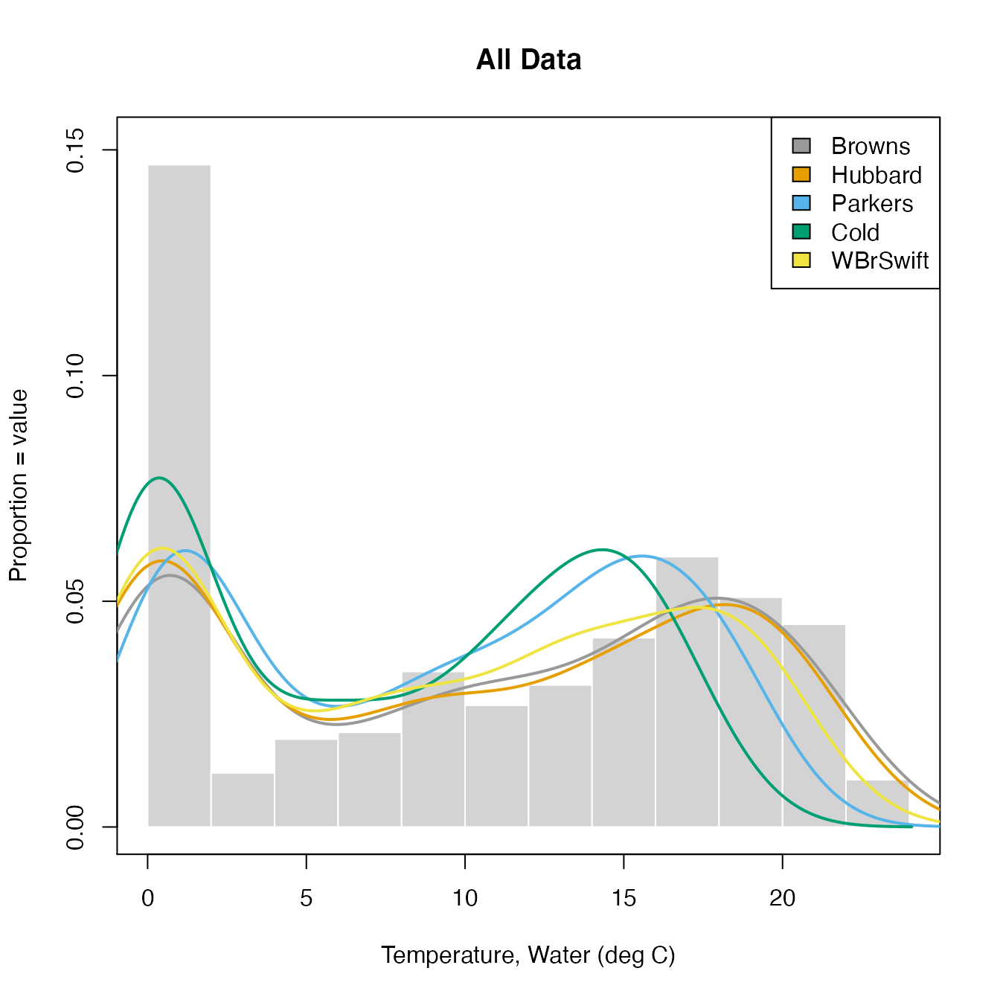
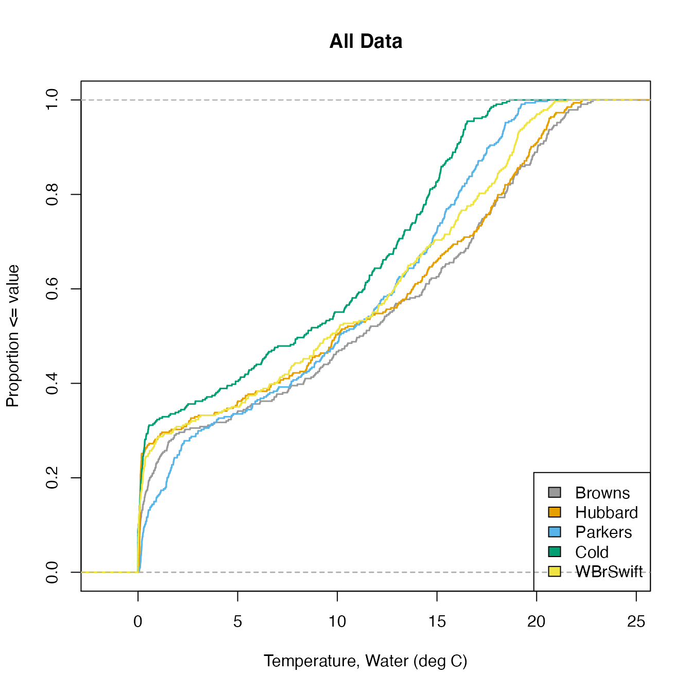
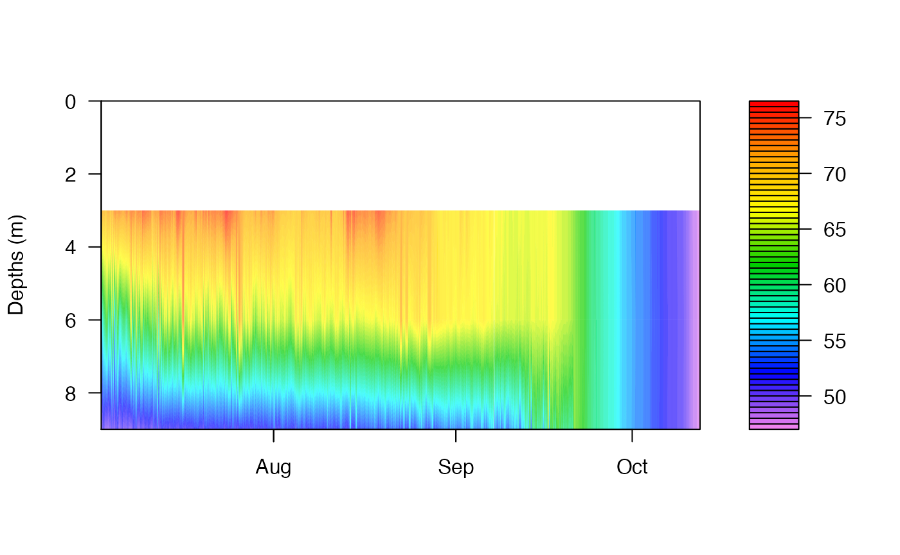

ContDataQC Vignette
Erik W. Leppo
2022-05-11
Source:vignettes/Vignette_ContDataQC.Rmd
Vignette_ContDataQC.RmdIntroduction
ContDataQC was created by Tetra Tech, Inc. for USEPA in 2017 to meet the needs of the Regional Monitoring Networks to apply a minimum level of quality control to the continuous monitoring data they were collecting.
It is envisioned that this library can be a living package and will add additional functions and routines in the future.
Many of the examples in this vignette are included in the examples in the corresponding functions. Each function in the ContDataQC library includes example data.
The typical user of this package is envisioned as a user of Hobo or other continuous data loggers. Measured parameters are water temperature, sensor depth, air temperature, water pressure, and air pressure. The typical user will retrieve data from their data logger using Hoboware. Once the data is extracted from the logger and save some minimal cleanup to the column heades is performed before using the ‘ContDataQC’ R library.
There is a configuration file (config.R) that allows for customization.
Installation
The R library is saved on GitHub for ease of updating and distribution. Issues can be tracked, fixed, and code made available for download. Current users can update the library using the same code used to install the library (see below). Devtools is required for the installation.
install.packages("devtools")
library(devtools)
install_github("leppott/ContDataQC")To contact the authors directly email Erik.Leppo@tetratech.com or Jen.Stamp@tetratech.com.
Occasionaly R does not import all of the necessary dependent libraries. Below is code to install all of the necessary libraries for using the ContDataQC library.
# install all dependant libraries manually
# libraries to be installed
data.packages = c(
"dataRetrieval" # loads USGS data into R
"zoo",
"knitr",
"survival",
"doBy",
"rmarkdown"
)
# install packages via a 'for' loop
for (i in 1:length(data.packages)) {
#install.packages("doBy",dependencies=TRUE)
install.packages(data.packages[i])
} # end loop
print("Task complete. Check statements above for errors.")An additional dependency that needs to be installed separately is Pandoc. This package is used to create the Reports. See R code below to install Pandoc. The package ‘installr’ allows for installation in a single step. If this doesn’t work you may need help from your IT department using the web links listed below. For users of RStudio Pandoc installs with RStudio so no extra install is needed.
In version 2.0.1.9048 (2017-11-16) of the ContDataQC package report format was added as a variable. The default is “html”. This can be changed in config.R. If you do not have Pandoc installed the package will still work but the reports in docx format will not be created (will show an error) unless you change the format to “html”.
# Install Pandoc (for docx Reports)
# (if using recent version of RStudio do not have to install separately)
install.packages("installr") # not needed if already have this package.
require(installr)
install.pandoc()
# The above won't work if don't have admin rights on your computer.
# Alternative = Download the file below and have your IT dept install for you.
# https://github.com/jgm/pandoc/releases/download/1.16.0.2/pandoc-1.16.0.2-windows.msi
# For help for installing via command window:
# http://www.intowindows.com/how-to-run-msi-file-as-administrator-from-command-prompt-in-windows/During the summer of 2017 USGS changed their webservices from http to https.
This necessitated a change in the R library dataRetrieval. As of the date of this Vignette the 2.7.2 version of dataRetrieval on CRAN is not the most current and fails when retrieving data inside of ContDataQC. The error statement is “Error in x[[1]] : subscript out of bounds”. If using the GetGageData operation in the ContDataQC() function it is necessary to get the most current version (>=2.7.3) of dataRetrieval (see code below). The ContDataQC library was tweaked on 11 September 2017 (version v2.0.1.9035) to work with the revised version of dataRetrieval (v2.7.3).
# inter-CRAN release hosted on USGS website
install.packages("dataRetrieval", repos="https://owi.usgs.gov/R")
# from GitHub
# install.packages("devtools")
# library(devtools)
# install_github("USGS-R/dataRetrieval")Preparing Raw Data
The ContDataQC library makes some assumptions on file names and structure.
File Names
Should be of the format StationID_DataType_StartDate_EndDate.csv. The delimiter between sections of the filename can be changed in config.R but not the order or the file type (csv). Date formats in the files can be set with config.R but the date format in the filename must be in the format YYYYMMDD (no separators).
Data types are Air, Water, Gage, and single letter combinations (i.e., AW, AG, and WG).
The ContDataQC Function
The ContDataQC() function is the main focus of this library. It is intended to allow the user to perform multiple functions from a single command with different inputs.
Operations
The operations of the ContDataQC() function are listed below but will be explained in more detail in their own section. GetGageData QCRaw Aggregate SummaryStats
The library assumes that there are the following folders in the working directory: Data0_Original Data1_RAW Data2_QC Data3_Aggregated *Data4_Stats
The folder “Data0_Original” is for the files exported from Hoboware (or other data logger software). These are the unedited files.
The folder “Data1_RAW” is for the files exported from Hoboware (or other data logger software). This folder contains the files as input for the QC portion of the library. These files may have been modified manually or with the formatHobo function.
The folder “Data2_QC” is for the output of the QCRaw operation of the library and the input for the Aggregate operation.
The folder “Data3_Aggregated” is the output of the Aggregate operation and the input for the Stats operation.
The folder “Data4_Stats” is the output of the SummaryStats operation.
For each operation associated with the ContDataQC() function a report is generated as an MS Word DOCX file.
The code below should be run before using the examples of each operation. The code below sets up the directories and some parameters for use in the later code.
# Parameters
Selection.Operation <- c("GetGageData"
, "QCRaw"
, "Aggregate"
, "SummaryStats")
Selection.Type <- c("Air","Water","AW","Gage","AWG","AG","WG")
Selection.SUB <- c("Data0_Original"
, "Data1_RAW"
, "Data2_QC"
, "Data3_Aggregated"
, "Data4_Stats")
(myDir.BASE <- tempdir()) # create and print temp directory for example data
# Create data directories
myDir.create <- file.path(myDir.BASE, Selection.SUB[1])
ifelse(dir.exists(myDir.create) == FALSE
, dir.create(myDir.create)
, "Directory already exists")
myDir.create <- file.path(myDir.BASE, Selection.SUB[2])
ifelse(dir.exists(myDir.create) == FALSE
, dir.create(myDir.create)
, "Directory already exists")
myDir.create <- file.path(myDir.BASE, Selection.SUB[3])
ifelse(dir.exists(myDir.create) == FALSE
, dir.create(myDir.create)
, "Directory already exists")
myDir.create <- file.path(myDir.BASE, Selection.SUB[4])
ifelse(dir.exists(myDir.create) == FALSE
, dir.create(myDir.create)
, "Directory already exists")
myDir.create <- file.path(myDir.BASE, Selection.SUB[5])
ifelse(dir.exists(myDir.create) == FALSE
, dir.create(myDir.create)
, "Directory already exists")
# Save example data (assumes myDir.BASE directory exists)
myData <- data_raw_test2_AW_20130426_20130725
write.csv(myData, file.path(myDir.BASE
, Selection.SUB[2]
, "test2_AW_20130426_20130725.csv"))
myData <- data_raw_test2_AW_20130725_20131015
write.csv(myData, file.path(myDir.BASE
, Selection.SUB[2]
, "test2_AW_20130725_20131015.csv"))
myData <- data_raw_test2_AW_20140901_20140930
write.csv(myData, file.path(myDir.BASE
, Selection.SUB[2]
, "test2_AW_20140901_20140930.csv"))
myData <- data_raw_test4_AW_20160418_20160726
write.csv(myData, file.path(myDir.BASE
, Selection.SUB[2]
, "test4_AW_20160418_20160726.csv"))
myFile <- "config.TZ.Central.R"
file.copy(file.path(path.package("ContDataQC"), "extdata", myFile)
, file.path(myDir.BASE, Selection.SUB[2], myFile))GetGageData
The GetGageData operation of the ContDataQC() function retrieves USGS gage data based on user input. Example code and console output is below.
library(ContDataQC)
# Parameters
Selection.Operation <- c("GetGageData"
, "QCRaw"
, "Aggregate"
, "SummaryStats")
Selection.Type <- c("Air","Water","AW","Gage","AWG","AG","WG")
Selection.SUB <- c("Data0_Original"
, "Data1_RAW"
, "Data2_QC"
, "Data3_Aggregated"
, "Data4_Stats")
(myDir.BASE <- tempdir()) # create and print temp directory for example data## [1] "/var/folders/24/8k48jl6d249_n_qfxwsl6xvm0000gn/T//RtmpqsJJTj"
# Create data directories
myDir.create <- file.path(myDir.BASE, Selection.SUB[1])
ifelse(dir.exists(myDir.create) == FALSE
, dir.create(myDir.create)
, "Directory already exists")## [1] TRUE
myDir.create <- file.path(myDir.BASE, Selection.SUB[2])
ifelse(dir.exists(myDir.create) == FALSE
, dir.create(myDir.create)
, "Directory already exists")## [1] TRUE
myDir.create <- file.path(myDir.BASE, Selection.SUB[3])
ifelse(dir.exists(myDir.create) == FALSE
, dir.create(myDir.create)
, "Directory already exists")## [1] TRUE
myDir.create <- file.path(myDir.BASE, Selection.SUB[4])
ifelse(dir.exists(myDir.create) == FALSE
, dir.create(myDir.create)
, "Directory already exists")## [1] TRUE
myDir.create <- file.path(myDir.BASE, Selection.SUB[5])
ifelse(dir.exists(myDir.create) == FALSE
, dir.create(myDir.create)
, "Directory already exists")## [1] TRUE
# Get Gage Data
myData.Operation <- "GetGageData" #Selection.Operation[1]
myData.SiteID <- "01187300" # Hubbard River near West Hartland, CT
myData.Type <- "Gage" # Selection.Type[4]
myData.DateRange.Start <- "2013-01-01"
myData.DateRange.End <- "2014-12-31"
myDir.import <- ""
myDir.export <- file.path(myDir.BASE, "Data1_RAW")
ContDataQC(myData.Operation
, myData.SiteID
, myData.Type
, myData.DateRange.Start
, myData.DateRange.End
, myDir.import
, myDir.export)## [1] "Total items to process = 1"
##
## [1] "Getting available data; 01187300."
##
## agency_cd site_no station_nm site_tp_cd
## 530 USGS 01187300 HUBBARD RIVER NEAR WEST HARTLAND, CT ST
## 531 USGS 01187300 HUBBARD RIVER NEAR WEST HARTLAND, CT ST
## 532 USGS 01187300 HUBBARD RIVER NEAR WEST HARTLAND, CT ST
## dec_lat_va dec_long_va coord_acy_cd dec_coord_datum_cd alt_va alt_acy_va
## 530 42.0375 -72.93933 H NAD83 594.57 0.01
## 531 42.0375 -72.93933 H NAD83 594.57 0.01
## 532 42.0375 -72.93933 H NAD83 594.57 0.01
## alt_datum_cd huc_cd data_type_cd parm_cd stat_cd ts_id loc_web_ds
## 530 NGVD29 01080207 uv 00010 <NA> 66869 NA
## 531 NGVD29 01080207 uv 00060 <NA> 66866 NA
## 532 NGVD29 01080207 uv 00065 <NA> 66867 NA
## medium_grp_cd parm_grp_cd srs_id access_cd begin_date end_date count_nu
## 530 wat <NA> 1645597 0 2015-11-04 2021-10-14 2171
## 531 wat <NA> 1645423 0 1990-10-01 2022-05-11 11545
## 532 wat <NA> 17164583 0 2007-10-01 2022-05-11 5336
##
##
## [1] "Processing item 1 of 1, COMPLETE, 01187300."
##
## [1] "Task COMPLETE; 0.19 min."Example of getting gage data in a different time zone specified in user modified configuration file.
library(ContDataQC)
# Parameters
Selection.Operation <- c("GetGageData","QCRaw", "Aggregate", "SummaryStats")
Selection.Type <- c("Air","Water","AW","Gage","AWG","AG","WG")
Selection.SUB <- c("Data0_Original"
,"Data1_RAW"
,"Data2_QC"
,"Data3_Aggregated"
,"Data4_Stats")
(myDir.BASE <- tempdir()) # create and print temp directory for example data
# Get Gage Data (central time zone)
myData.Operation <- "GetGageData" #Selection.Operation[1]
myData.SiteID <- "07032000" # Mississippi River at Memphis, TN
myData.Type <- Selection.Type[4] #"Gage"
myData.DateRange.Start <- "2013-01-01"
myData.DateRange.End <- "2014-12-31"
myDir.import <- ""
myDir.export <- file.path(myDir.BASE, Selection.SUB[2])
# include path if not in working directory
myConfig <- file.path(myDir.BASE, Selection.SUB[2]
, "config.TZ.central.R")
ContDataQC(myData.Operation
, myData.SiteID
, myData.Type
, myData.DateRange.Start
, myData.DateRange.End
, myDir.import
, myDir.export
, myConfig)QCRaw
This is operation is the main focus of the ContDataQC library. The raw continuous data files are examined for multiple QC tests and the results saved in a new data file (CSV) and a summary report (DOCX file) are generated.
library(ContDataQC)
# Parameters
Selection.Operation <- c("GetGageData"
, "QCRaw"
, "Aggregate"
, "SummaryStats")
Selection.Type <- c("Air","Water","AW","Gage","AWG","AG","WG")
Selection.SUB <- c("Data0_Original"
, "Data1_RAW"
, "Data2_QC"
, "Data3_Aggregated"
, "Data4_Stats")
(myDir.BASE <- tempdir()) # create and print temp directory for example data
# QC Raw Data
myData.Operation <- "QCRaw" #Selection.Operation[2]
myData.SiteID <- "test2"
myData.Type <- Selection.Type[3] #"AW"
myData.DateRange.Start <- "2013-01-01"
myData.DateRange.End <- "2014-12-31"
myDir.import <- file.path(myDir.BASE, Selection.SUB[2]) #"Data1_RAW"
myDir.export <- file.path(myDir.BASE, Selection.SUB[3]) #"Data2_QC"
myReport.format <- "docx"
ContDataQC(myData.Operation
, myData.SiteID
, myData.Type
, myData.DateRange.Start
, myData.DateRange.End
, myDir.import
, myDir.export
, fun.myReport.format = myReport.format)In some cases two sensors are used (one for air and one for water) and the timing of the sampling is off between the two. The library handles this fine.
Example data below. For this example the report output was changed to “html”.
library(ContDataQC)
# Parameters
Selection.Operation <- c("GetGageData","QCRaw", "Aggregate", "SummaryStats")
Selection.Type <- c("Air","Water","AW","Gage","AWG","AG","WG")
Selection.SUB <- c("Data0_Original"
,"Data1_RAW"
,"Data2_QC"
,"Data3_Aggregated"
,"Data4_Stats")
(myDir.BASE <- tempdir()) # create and print temp directory for example data
# QC Raw Data (offset collection times for air and water sensors)
myData.Operation <- "QCRaw" #Selection.Operation[2]
myData.SiteID <- "test4"
myData.Type <- Selection.Type[3] #"AW"
myData.DateRange.Start <- "2016-04-28"
myData.DateRange.End <- "2016-07-26"
myDir.import <- file.path(myDir.BASE, Selection.SUB[2]) #"Data1_RAW"
myDir.export <- file.path(myDir.BASE, Selection.SUB[3]) #"Data2_QC"
myReport.format <- "html"
ContDataQC(myData.Operation
, myData.SiteID
, myData.Type
, myData.DateRange.Start
, myData.DateRange.End
, myDir.import
, myDir.export
, fun.myReport.format = myReport.format)Aggregate
After QC the files are ready for analysis. The Aggregate operation allows the user to combine (or split) files across time periods. No report format was specified so the default “docx” format will be generated.
library(contDataQC)
# Parameters
Selection.Operation <- c("GetGageData"
, "QCRaw"
, "Aggregate"
, "SummaryStats")
Selection.Type <- c("Air","Water","AW","Gage","AWG","AG","WG")
Selection.SUB <- c("Data0_Original"
, "Data1_RAW"
, "Data2_QC"
, "Data3_Aggregated"
, "Data4_Stats")
(myDir.BASE <- tempdir()) # create and print temp directory for example data
# Aggregate Data
myData.Operation <- "Aggregate" #Selection.Operation[3]
myData.SiteID <- "test2"
myData.Type <- Selection.Type[3] #"AW"
myData.DateRange.Start <- "2013-01-01"
myData.DateRange.End <- "2014-12-31"
myDir.import <- file.path(myDir.BASE, Selection.SUB[3]) #"Data2_QC"
myDir.export <- file.path(myDir.BASE, Selection.SUB[4])
#"Data3_Aggregated"
#Leave off myReport.format and get default (docx).
ContDataQC(myData.Operation
, myData.SiteID
, myData.Type
, myData.DateRange.Start
, myData.DateRange.End
, myDir.import
, myDir.export)SummaryStats
The SummaryStats operation calculates a number of statistics on the data for each sampling day. No report format was specified so the default “docx” format will be generated.
library(ContDataQC)
# Parameters
Selection.Operation <- c("GetGageData"
, "QCRaw"
, "Aggregate"
, "SummaryStats")
Selection.Type <- c("Air","Water","AW","Gage","AWG","AG","WG")
Selection.SUB <- c("Data0_Original"
, "Data1_RAW"
, "Data2_QC"
, "Data3_Aggregated"
, "Data4_Stats")
(myDir.BASE <- tempdir()) # create and print temp directory for example data
# Summary Stats
myData.Operation <- "SummaryStats" #Selection.Operation[4]
myData.SiteID <- "test2"
myData.Type <- Selection.Type[3] #"AW"
myData.DateRange.Start <- "2013-01-01"
myData.DateRange.End <- "2014-12-31"
myDir.import <- file.path(myDir.BASE, Selection.SUB[4])
#"Data3_Aggregated"
myDir.export <- file.path(myDir.BASE, Selection.SUB[5]) #"Data4_Stats"
#Leave off myReport.format and get default (docx).
ContDataQC(myData.Operation
, myData.SiteID
, myData.Type
, myData.DateRange.Start
, myData.DateRange.End
, myDir.import
, myDir.export)Single File Versions of ContDataQC Operatations
The base version of the ContDataQC() function searches the specified directories for files that match the data type and date range. This set up does not work for everyone. Included in the ContDataQC package are “file” versions of the same QCRaw, Aggregate, and SummaryStat functions. These work on a vector of file names (so multiple files can be processed this way).Different report options are used in each example in the code below.
library(ContDataQC)
#~~~~~~~~~~~~~~
# File Versions
#~~~~~~~~~~~~~~
(myDir.BASE <- tempdir()) # create and print temp directory for example data
# QC Data
myData.Operation <- "QCRaw" #Selection.Operation[2]
#myFile <- "test2_AW_20130426_20130725.csv"
myFile <- c("test2_AW_20130426_20130725.csv"
, "test2_AW_20130725_20131015.csv"
, "test2_AW_20140901_20140930.csv")
myDir.import <- file.path(myDir.BASE, "Data1_RAW")
myDir.export <- file.path(myDir.BASE, "Data2_QC")
myReport.format <- "docx"
ContDataQC(myData.Operation
, fun.myDir.import = myDir.import
, fun.myDir.export = myDir.export
, fun.myFile = myFile
, fun.myReport.format = myReport.format)
# Aggregate Data
myData.Operation <- "Aggregate" #Selection.Operation[3]
myFile <- c("QC_test2_Aw_20130426_20130725.csv"
, "QC_test2_Aw_20130725_20131015.csv"
, "QC_test2_Aw_20140901_20140930.csv")
myDir.import <- file.path(myDir.BASE, "Data2_QC")
myDir.export <- file.path(myDir.BASE, "Data3_Aggregated")
myReport.format <- "html"
ContDataQC(myData.Operation
, fun.myDir.import = myDir.import
, fun.myDir.export = myDir.export
, fun.myFile = myFile
, fun.myReport.format = myReport.format)
# Summary Stats
myData.Operation <- "SummaryStats" #Selection.Operation[4]
myFile <- "QC_test2_AW_20130426_20130725.csv"
#myFile <- c("QC_test2_AW_20130426_20130725.csv"
# , "QC_test2_AW_20130725_20131015.csv"
# , "QC_test2_AW_20140901_20140930.csv")
myDir.import <- file.path(myDir.BASE, "Data2_QC")
myDir.export <- file.path(myDir.BASE, "Data4_Stats")
#Leave off myReport.format and get default (docx).
ContDataQC(myData.Operation
, fun.myDir.import = myDir.import
, fun.myDir.export = myDir.export
, fun.myFile = myFile)Other Features
There are other features built into the ContDataQC library. These are outlined below.
Configuration File
Through the use of a configuration file the user can change many of the variables in the library (e.g., the names of fields, thresholds, and date formats).
The ContDataQC() function allows the user to input their own configuration file. Only variables that are different from the default need to be added. That is, the default configuration is loaded in the library and then the user supplied configuration. This allows the user configuration to overwrite the defaults for that session.
The Config.out will output the contents of the configuration file as used by the package and stored in the environment ContData.env.
The contents of the configuration file (extdata/config.ORIG.R) are listed below.
# User Defined Values
#
# User defined values for variables used across multiple functions in this
# library. The user has the ability to modify the values for names, units, QC
# thresholds, etc.
#
# Saved in a separate environment.
#
# https://www.r-bloggers.com/package-wide-variablescache-in-r-packages/
#
# Continuous data helper script
# Default Values
# Erik.Leppo@tetratech.com (EWL)
# 20150928
# 20170323, add 3 parameters (Cond, DO, pH)
# 20210106, replace gageheight with waterlevel
#~~~~~~~~~~~~~~~~~~~~~~~~~~~~~~~~~~~~~~~~~~~~~~~~~~~~~~~~~~~~~~~~~~~~
# User defined variable names for input data
#~~~~~~~~~~~~~~~~~~~~~~~~~~~~~~~~~~~~~~~~~~~~~~~~~~~~~~~~~~~~~~~~~~~~
# It is assumed that this R script is stored in a directory with the data files
# as subdirectories. This script is intended to be "source"d from the main
# script.
#~~~~~~~~~~~~~~~~~~~~~~~~~~~~~~~~~~~~~~~~~~~~~~~~~~~~~~~~~~~~~~~~~~~~
# @keywords continuous data
# @examples
# #Not intended to be accessed indepedant of function ContDataQC().
# #Data values only. No functions. Add to environment so only visible inside
# #library.
#~~~~~~~~~~~~~~~~~~~~~~~~~~~~~~~~~~~~~~~~~~~~~~~~~~~~~~~~~~~~~~~~~~~~
# USER may make modifications in this section but not mandatory
# this section could be sourced so can use between scripts
#~~~~~~~~~~~~~~~~~~~~~~~~~~~~~~~~~~~~~~~~~~~~~~~~~~~~~~~~~~~~~~~~~~~~
#UserDefinedValues <- NA # default value so shows up in help files
#~~~~~~~~~~~~~~~~~~~~~~~~~~~~~~~~~~~~~~~~~~~~~~~~~~~~~~~~~~~~~~~~~~~~
# Environment Name ####
# Environment for use only by ContDataQC library
ContData.env <- new.env(parent = emptyenv())
# The above line is not used in custom configurations.
# assign variables to new environment requires editing of all lines.
# For example, myDelim <- "_" BECOMES ContData.env$myDelim, "_"
###
# list all elements in environment
# ls(ContData.env) # all elements in environment
# as.list(ContData.env) # all elements in environment with assigned values
#~~~~~~~~~~~~~~~~~~~~~~~~~~~~~~~~~~~~~~~~~~~~~~~~~~~~~~~~~~~~~~~~~~~~
# Delimiter in File Names (e.g., test2_AW_201301_20131231.csv)
ContData.env$myDelim <- "_"
ContData.env$myDelim_LakeID <- "--"
#~~~~~~~~~~~~~~~~~~~~~~~~~~~~~~~~~~~~~~~~~~~~~~~~~~~~~~~~~~~~~~~~~~~~
# Acceptable column names for the data ####
## Basic
ContData.env$myName.SiteID <- "SiteID"
ContData.env$myName.Date <- "Date"
ContData.env$myName.Time <- "Time"
ContData.env$myName.DateTime <- "Date.Time"
#(special characters (e.g., %, space, or /) are converted to "." by R
# , "deg" converted to "A")
### IF CHANGE UNITS WILL NEED TO MODIFY THRESHOLDS ###
ContData.env$myUnits.AirTemp <- "C" # C or F
ContData.env$myUnits.WaterTemp <- ContData.env$myUnits.AirTemp
ContData.env$myUnits.AirBP <- "psi"
ContData.env$myUnits.WaterP <- ContData.env$myUnits.AirBP
ContData.env$myUnits.SensorDepth <- "ft"
ContData.env$myUnits.Discharge <- "ft3.s"
ContData.env$myUnits.Cond <- "uS.cm"
ContData.env$myUnits.DO <- "mg.L"
ContData.env$myUnits.DO.adj <- "mg.L"
ContData.env$myUnits.DO.pctsat <- "percent"
ContData.env$myUnits.pH <- "SU"
ContData.env$myUnits.Turbidity <- "NTU"
ContData.env$myUnits.Chlorophylla <- "g.cm3"
ContData.env$myUnits.WaterLevel <- "ft"
ContData.env$myUnits.Salinity <- "ppt"
## Logger Fields ----
ContData.env$myName.RowID.Water <- "Water.RowID"
ContData.env$myName.LoggerID.Water<- "Water.LoggerID"
ContData.env$myName.RowID.Air <- "Air.RowID"
ContData.env$myName.LoggerID.Air <- "Air.LoggerID"
ContData.env$myName.LoggerDeployment <- "Logger.Deployment"
ContData.env$myName.LoggerDeployment.start <- "start"
ContData.env$myName.LoggerDeployment.end <- "end"
## Parameters as appear in logger files
ContData.env$myName.WaterTemp <- paste0("Water.Temp."
,ContData.env$myUnits.WaterTemp)
# "deg" from HoboWare files sometimes adds "A " in front. Replace with "." in R
ContData.env$myName.AirTemp <- paste0("Air.Temp."
,ContData.env$myUnits.AirTemp)
# "deg" from HoboWare files sometimes adds "A " in front. Replace with "." in R
ContData.env$myName.AirBP <- paste0("Air.BP."
, ContData.env$myUnits.AirBP)
ContData.env$myName.WaterP <- paste0("Water.P."
, ContData.env$myUnits.WaterP)
ContData.env$myName.SensorDepth <- paste0("Sensor.Depth."
, ContData.env$myUnits.SensorDepth)
ContData.env$myName.Discharge <- paste0("Discharge."
, ContData.env$myUnits.Discharge)
ContData.env$myName.Cond <- paste0("Conductivity."
, ContData.env$myUnits.Cond)
ContData.env$myName.DO <- paste0("DO.", ContData.env$myUnits.DO)
ContData.env$myName.DO.adj <- paste0("DO.adj.", ContData.env$myUnits.DO.adj)
ContData.env$myName.DO.pctsat <- paste0("DO.pctsat.", ContData.env$myUnits.DO.pctsat)
ContData.env$myName.pH <- paste0("pH."
, ContData.env$myUnits.pH)
ContData.env$myName.Turbidity <- paste0("Turbidity."
, ContData.env$myUnits.Turbidity)
ContData.env$myName.Chlorophylla <- paste0("Chlorophylla."
, ContData.env$myUnits.Chlorophylla)
ContData.env$myName.WaterLevel <- paste0("Water.Level."
, ContData.env$myUnits.WaterLevel)
ContData.env$myName.Salinity <- paste0("Salinity."
, ContData.env$myUnits.Salinity)
## Plot Labels
ContData.env$myLab.Date <- "Date"
ContData.env$myLab.DateTime <- "Date"
ContData.env$myLab.WaterTemp <- paste0("Temperature, Water (deg "
,ContData.env$myUnits.WaterTemp
,")")
ContData.env$myLab.AirTemp <- paste0("Temperature, Air (deg "
,ContData.env$myUnits.AirTemp
,")")
ContData.env$myLab.AirBP <- paste0("Barometric Pressure, Air ("
,ContData.env$myUnits.WaterP
,")")
ContData.env$myLab.WaterP <- paste0("Pressure, Water ("
,ContData.env$myUnits.AirBP
,")")
ContData.env$myLab.SensorDepth <- paste0("Sensor Depth ("
,ContData.env$myUnits.SensorDepth
,")"
,sep="")
ContData.env$myLab.Temp.BOTH <- paste0("Temperature (deg "
,ContData.env$myUnits.WaterTemp
,")")
ContData.env$myLab.Discharge <- paste0("Discharge ("
,sub("\\.","/"
,ContData.env$myUnits.Discharge)
,")") #replace "." with "/"
ContData.env$myLab.Cond <- paste0("Conductivity ("
,sub("\\.","/"
,ContData.env$myUnits.Cond)
,")") #replace "." with "/"
ContData.env$myLab.DO <- paste0("Dissolved Oxygen ("
,sub("\\.","/"
,ContData.env$myUnits.DO)
,")") #replace "." with "/"
ContData.env$myLab.DO.adj <- paste0("Dissolved Oxygen, adjusted ("
,sub("\\.","/"
,ContData.env$myUnits.DO.adj)
,")") #replace "." with "/"
ContData.env$myLab.DO.pctsat <- paste0("Dissolved Oxygen, percent saturation ("
,sub("\\.","/"
,ContData.env$myUnits.DO.pctsat)
,")") #replace "." with "/"
ContData.env$myLab.pH <- paste0("pH ("
,ContData.env$myUnits.pH
,")")
ContData.env$myLab.Turbidity <- paste0("Turbidity ("
,ContData.env$myUnits.Turbidity
,")")
ContData.env$myLab.Chlorophylla <- paste0("Chlorophyll a ("
,sub("\\.","/"
,ContData.env$myUnits.Chlorophylla)
,")") #replace "." with "/"
ContData.env$myLab.WaterLevel <- paste0("Water Level ("
,ContData.env$myUnits.WaterLevel
,")")
ContData.env$myLab.Salinity <- paste0("Salinity ("
,ContData.env$myUnits.Salinity
,")")
#~~~~~~~~~~~~~~~~~~~~~~~~~~~~~~~~~~~~~~~~~~~~~~~~~~~~~~~~~~~~~~~~~~~~
# Discrete Measurements ####
ContData.env$myPrefix.Discrete <- "Discrete"
# Discrete, Names
ContData.env$myName.Discrete.WaterTemp <- paste(ContData.env$myPrefix.Discrete
,ContData.env$myName.WaterTemp
,sep=".")
ContData.env$myName.Discrete.AirTemp <- paste(ContData.env$myPrefix.Discrete
,ContData.env$myName.AirTemp
,sep=".")
ContData.env$myName.Discrete.AirBP <- paste(ContData.env$myPrefix.Discrete
,ContData.env$myName.AirBP
,sep=".")
ContData.env$myName.Discrete.WaterP <- paste(ContData.env$myPrefix.Discrete
,ContData.env$myName.WaterP
,sep=".")
ContData.env$myName.Discrete.SensorDepth <- paste(ContData.env$myPrefix.Discrete
,ContData.env$myName.SensorDepth
,sep=".")
ContData.env$myName.Discrete.Discharge <- paste(ContData.env$myPrefix.Discrete
,ContData.env$myName.Discharge
,sep=".")
ContData.env$myName.Discrete.Cond <- paste(ContData.env$myPrefix.Discrete
,ContData.env$myName.Cond
,sep=".")
ContData.env$myName.Discrete.DO <- paste(ContData.env$myPrefix.Discrete
,ContData.env$myName.DO
,sep=".")
ContData.env$myName.Discrete.DO.adj <- paste(ContData.env$myPrefix.Discrete
,ContData.env$myName.DO.adj
,sep=".")
ContData.env$myName.Discrete.DO.pctsat <- paste(ContData.env$myPrefix.Discrete
, ContData.env$myName.DO.pctsat
, sep=".")
ContData.env$myName.Discrete.pH <- paste(ContData.env$myPrefix.Discrete
,ContData.env$myName.pH
,sep=".")
ContData.env$myName.Discrete.Turbidity <- paste(ContData.env$myPrefix.Discrete
,ContData.env$myName.Turbidity
,sep=".")
ContData.env$myName.Discrete.Chlorophylla <-paste(ContData.env$myPrefix.Discrete
,ContData.env$myName.Chlorophylla
,sep=".")
ContData.env$myName.Discrete.WaterLevel <- paste(ContData.env$myPrefix.Discrete
,ContData.env$myName.WaterLevel
,sep=".")
ContData.env$myName.Discrete.Salinity <- paste(ContData.env$myPrefix.Discrete
,ContData.env$myName.Salinity
,sep=".")
# Discrete, Labels
ContData.env$myLab.Discrete.WaterTemp <- paste(ContData.env$myLab.WaterTemp
,"(Discrete)"
,sep=" ")
ContData.env$myLab.Discrete.AirTemp <- paste(ContData.env$myLab.AirTemp
,"(Discrete)"
,sep=" ")
ContData.env$myLab.Discrete.AirBP <- paste(ContData.env$myLab.AirBP
,"(Discrete)"
,sep=" ")
ContData.env$myLab.Discrete.WaterP <- paste(ContData.env$myLab.WaterP
,"(Discrete)"
,sep=" ")
ContData.env$myLab.Discrete.SensorDepth <- paste(ContData.env$myLab.SensorDepth
,"(Discrete)"
,sep=" ")
ContData.env$myLab.Discrete.Discharge <- paste(ContData.env$myLab.Discharge
,"(Discrete)"
,sep=" ")
ContData.env$myLab.Discrete.Cond <- paste(ContData.env$myLab.Cond
,"(Discrete)"
,sep=" ")
ContData.env$myLab.Discrete.DO <- paste(ContData.env$myLab.DO
,"(Discrete)"
,sep=" ")
ContData.env$myLab.Discrete.DO.adj <- paste(ContData.env$myLab.DO.adj
,"(Discrete)"
,sep=" ")
ContData.env$myLab.Discrete.DO.pctsat <- paste(ContData.env$myLab.DO.pctsat
,"(Discrete)"
,sep=" ")
ContData.env$myLab.Discrete.pH <- paste(ContData.env$myLab.pH
,"(Discrete)"
,sep=" ")
ContData.env$myLab.Discrete.Turbidity <- paste(ContData.env$myLab.Turbidity
,"(Discrete)"
,sep=" ")
ContData.env$myLab.Discrete.Chlorophylla<- paste(ContData.env$myLab.Chlorophylla
,"(Discrete)"
,sep=" ")
ContData.env$myLab.Discrete.WaterLevel <- paste(ContData.env$myLab.WaterLevel
,"(Discrete)"
,sep=" ")
ContData.env$myLab.Discrete.Salinity <- paste(ContData.env$myLab.Salinity
,"(Discrete)"
,sep=" ")
#~~~~~~~~~~~~~~~~~~~~~~~~~~~~~~~~~~~~~~~~~~~~~~~~~~~~~~~~~~~~~~~~~~~~
# Automated QC stuff ####
## data type/stages
ContData.env$myDataQuality.Raw <- "RAW"
ContData.env$myDataQuality.QCauto <- "QCauto"
ContData.env$myDataQuality.QCmanual <- "QCmanual"
ContData.env$myDataQuality.Final <- "Final"
ContData.env$myDataQuality.Aggregated <- "Aggregated"
#~~~~~~~~~~~~~~~~~~~~~~~~~~~~~~~~~~~~~~~~~~~~~~~~~~~~~~~~~~~~~~~~~~~~
# Directory Names ####
ContData.env$myName.Dir.0Original <- "Data0_Original"
ContData.env$myName.Dir.1Raw <- "Data1_Raw"
ContData.env$myName.Dir.2QC <- "Data2_QC"
ContData.env$myName.Dir.3Agg <- "Data3_Aggregated"
ContData.env$myName.Dir.4Stats <- "Data4_Stats"
#~~~~~~~~~~~~~~~~~~~~~~~~~~~~~~~~~~~~~~~~~~~~~~~~~~~~~~~~~~~~~~~~~~~~
# Data Fields ####
ContData.env$myNames.DataFields <- c(ContData.env$myName.WaterTemp
, ContData.env$myName.AirTemp
, ContData.env$myName.AirBP
, ContData.env$myName.WaterP
, ContData.env$myName.SensorDepth
, ContData.env$myName.Discharge
, ContData.env$myName.Cond
, ContData.env$myName.DO
, ContData.env$myName.DO.adj
, ContData.env$myName.DO.pctsat
, ContData.env$myName.pH
, ContData.env$myName.Turbidity
, ContData.env$myName.Chlorophylla
, ContData.env$myName.WaterLevel
, ContData.env$myName.Discrete.WaterTemp
, ContData.env$myName.Discrete.AirTemp
, ContData.env$myName.Discrete.WaterP
, ContData.env$myName.Discrete.AirBP
, ContData.env$myName.Discrete.SensorDepth
, ContData.env$myName.Discrete.Discharge
, ContData.env$myName.Discrete.Cond
, ContData.env$myName.Discrete.DO
, ContData.env$myName.Discrete.DO.adj
, ContData.env$myName.Discrete.DO.pctsat
, ContData.env$myName.Discrete.pH
, ContData.env$myName.Discrete.Turbidity
, ContData.env$myName.Discrete.Chlorophylla
, ContData.env$myName.Discrete.WaterLevel
, ContData.env$myName.Discrete.Salinity
)
ContData.env$myNames.DataFields.Lab <- c(ContData.env$myLab.WaterTemp
, ContData.env$myLab.AirTemp
, ContData.env$myLab.AirBP
, ContData.env$myLab.WaterP
, ContData.env$myLab.SensorDepth
, ContData.env$myLab.Discharge
, ContData.env$myLab.Cond
, ContData.env$myLab.DO
, ContData.env$myLab.DO.adj
, ContData.env$myLab.DO.pctsat
, ContData.env$myLab.pH
, ContData.env$myLab.Turbidity
, ContData.env$myLab.Chlorophylla
, ContData.env$myLab.WaterLevel
, ContData.env$myLab.Discrete.WaterTemp
, ContData.env$myLab.Discrete.AirTemp
, ContData.env$myLab.Discrete.WaterP
, ContData.env$myLab.Discrete.AirBP
, ContData.env$myLab.Discrete.SensorDepth
, ContData.env$myLab.Discrete.Discharge
, ContData.env$myLab.Discrete.Cond
, ContData.env$myLab.Discrete.DO
, ContData.env$myLab.Discrete.DO.adj
, ContData.env$myLab.Discrete.DO.pctsat
, ContData.env$myLab.Discrete.pH
, ContData.env$myLab.Discrete.Turbidity
, ContData.env$myLab.Discrete.Chlorophylla
, ContData.env$myLab.Discrete.WaterLevel
, ContData.env$myLab.Discrete.Salinity
)
ContData.env$myNames.DataFields.Col <- c("blue","green","gray","gray","black"
,"brown","purple","orange","salmon"
,"rosybrown","aquamarine1")
#
## Name Order (change order below to change order in output file)
ContData.env$myNames.Order <- c(ContData.env$myName.SiteID
, ContData.env$myName.Date
, ContData.env$myName.Time
, ContData.env$myName.DateTime
, ContData.env$myName.LoggerDeployment
, ContData.env$myName.WaterTemp
, ContData.env$myName.LoggerID.Air
, ContData.env$myName.RowID.Air
, ContData.env$myName.AirTemp
, ContData.env$myName.WaterP
, ContData.env$myName.AirBP
, ContData.env$myName.SensorDepth
, ContData.env$myName.Discharge
, ContData.env$myName.Cond
, ContData.env$myName.DO
, ContData.env$myName.DO.adj
, ContData.env$myName.DO.pctsat
, ContData.env$myName.pH
, ContData.env$myName.Turbidity
, ContData.env$myName.Chlorophylla
, ContData.env$myName.WaterLevel
, ContData.env$myName.LoggerID.Water
, ContData.env$myName.RowID.Water
, ContData.env$myName.Discrete.WaterTemp
, ContData.env$myName.Discrete.AirTemp
, ContData.env$myName.Discrete.WaterP
, ContData.env$myName.Discrete.AirBP
, ContData.env$myName.Discrete.SensorDepth
, ContData.env$myName.Discrete.Discharge
, ContData.env$myName.Discrete.Cond
, ContData.env$myName.Discrete.DO
, ContData.env$myName.Discrete.DO.adj
, ContData.env$myName.Discrete.DO.pctsat
, ContData.env$myName.Discrete.pH
, ContData.env$myName.Discrete.Turbidity
, ContData.env$myName.Discrete.Chlorophylla
, ContData.env$myName.Discrete.WaterLevel
, ContData.env$myName.Discrete.Salinity
)
#~~~~~~~~~~~~~~~~~~~~~~~~~~~~~~~~~~~~~~~~~~~~~~~~~~~~~~~~~~~~~~~~~~~~
## Data Quality Flag Values ####
ContData.env$myFlagVal.Pass <- "P"
ContData.env$myFlagVal.NotEval <- "NA"
ContData.env$myFlagVal.Suspect <- "S"
ContData.env$myFlagVal.Fail <- "F"
ContData.env$myFlagVal.NoData <- "X"
ContData.env$myFlagVal.Order <- c(ContData.env$myFlagVal.Pass
, ContData.env$myFlagVal.Suspect
, ContData.env$myFlagVal.Fail
, ContData.env$myFlagVal.NoData)
#~~~~~~~~~~~~~~~~~~~~~~~~~~~~~~~~~~~~~~~~~~~~~~~~~~~~~~~~~~~~~~~~~~~~
# QC Tests and Calculations ####
#http://stackoverflow.com/questions/16143700/pasting-two-vectors-with-combinations-of-all-vectors-elements
#myNames.QCTests.Calcs.combo <- as.vector(t(outer(myNames.QCTests,myNames.QCTests.Calcs,paste,sep=".")))
# combine so can check for and remove later.
#myNames.DataFields.QCTests.Calcs.combo <- as.vector(t(outer(myNames.DataFields,myNames.QCTests.Calcs.combo,paste,sep=".")))
# Data Quality Flag Thresholds
# _QC, Gross----
## Gross Min/Max, Fail (equipment)
### Examines values as outliers versus threholds
### if value >= Hi or <= Lo then flagged as "Fail"
ContData.env$myThresh.Gross.Fail.Hi.WaterTemp <- 30
ContData.env$myThresh.Gross.Fail.Lo.WaterTemp <- -2
ContData.env$myThresh.Gross.Fail.Hi.AirTemp <- 38
ContData.env$myThresh.Gross.Fail.Lo.AirTemp <- -25
ContData.env$myThresh.Gross.Fail.Hi.AirBP <- 15
ContData.env$myThresh.Gross.Fail.Lo.AirBP <- 13
ContData.env$myThresh.Gross.Fail.Hi.WaterP <- 17
ContData.env$myThresh.Gross.Fail.Lo.WaterP <- 13
ContData.env$myThresh.Gross.Fail.Hi.SensorDepth <- 10^5 # dependent upon stream size
ContData.env$myThresh.Gross.Fail.Lo.SensorDepth <- -1 # dependent upon stream size
ContData.env$myThresh.Gross.Fail.Hi.Discharge <- 10^5 # dependent upon stream size
ContData.env$myThresh.Gross.Fail.Lo.Discharge <- -1 # dependent upon stream size
ContData.env$myThresh.Gross.Fail.Hi.Cond <- 1500 # this threshold has not been closely evaluated
ContData.env$myThresh.Gross.Fail.Lo.Cond <- 10 # this threshold has not been closely evaluated
ContData.env$myThresh.Gross.Fail.Hi.DO <- 20 # this threshold has not been closely evaluated
ContData.env$myThresh.Gross.Fail.Lo.DO <- 1 # this threshold has not been closely evaluated
ContData.env$myThresh.Gross.Fail.Hi.DO.adj <- 20 # this threshold has not been closely evaluated
ContData.env$myThresh.Gross.Fail.Lo.DO.adj <- 1 # this threshold has not been closely evaluated
ContData.env$myThresh.Gross.Fail.Hi.DO.pctsat <- 120 # this threshold has not been closely evaluated
ContData.env$myThresh.Gross.Fail.Lo.DO.pctsat <- -1 # this threshold has not been closely evaluated
ContData.env$myThresh.Gross.Fail.Hi.pH <- 12 # this threshold has not been closely evaluated
ContData.env$myThresh.Gross.Fail.Lo.pH <- 3 # this threshold has not been closely evaluated
ContData.env$myThresh.Gross.Fail.Hi.Turbidity <- 10^5 # this threshold has not been closely evaluated
ContData.env$myThresh.Gross.Fail.Lo.Turbidity <- -1 # this threshold has not been closely evaluated
ContData.env$myThresh.Gross.Fail.Hi.Chlorophylla <- 10^5 # this threshold has not been closely evaluated
ContData.env$myThresh.Gross.Fail.Lo.Chlorophylla <- -1 # this threshold has not been closely evaluated
ContData.env$myThresh.Gross.Fail.Hi.WaterLevel <- ContData.env$myThresh.Gross.Fail.Hi.SensorDepth
ContData.env$myThresh.Gross.Fail.Lo.WaterLevel <- ContData.env$myThresh.Gross.Fail.Lo.SensorDepth
ContData.env$myThresh.Gross.Fail.Hi.Salinity <- 41
ContData.env$myThresh.Gross.Fail.Lo.Salinity <- 2
## Gross Min/Max, Suspect (extreme)
### Examines values as outliers versus threholds
### if value >= Hi or <= Lo then flagged as "Suspect"
ContData.env$myThresh.Gross.Suspect.Hi.WaterTemp <- 25
ContData.env$myThresh.Gross.Suspect.Lo.WaterTemp <- -0.1
ContData.env$myThresh.Gross.Suspect.Hi.AirTemp <- 35
ContData.env$myThresh.Gross.Suspect.Lo.AirTemp <- -23
ContData.env$myThresh.Gross.Suspect.Hi.AirBP <- 14.8
ContData.env$myThresh.Gross.Suspect.Lo.AirBP <- 13.0
ContData.env$myThresh.Gross.Suspect.Hi.WaterP <- 16.8
ContData.env$myThresh.Gross.Suspect.Lo.WaterP <- 13.5
ContData.env$myThresh.Gross.Suspect.Hi.SensorDepth <- 10^3 # dependent upon stream size
ContData.env$myThresh.Gross.Suspect.Lo.SensorDepth <- 0 # dependent upon stream size
ContData.env$myThresh.Gross.Suspect.Hi.Discharge <- 10^3 # dependent upon stream size
ContData.env$myThresh.Gross.Suspect.Lo.Discharge <- -1 # dependent upon stream size
ContData.env$myThresh.Gross.Suspect.Hi.Cond <- 1200 # this threshold has not been closely evaluated
ContData.env$myThresh.Gross.Suspect.Lo.Cond <- 20 # this threshold has not been closely evaluated
ContData.env$myThresh.Gross.Suspect.Hi.DO <- 18 # this threshold has not been closely evaluated
ContData.env$myThresh.Gross.Suspect.Lo.DO <- 2 # this threshold has not been closely evaluated
ContData.env$myThresh.Gross.Suspect.Hi.DO.adj <- 18 # this threshold has not been closely evaluated
ContData.env$myThresh.Gross.Suspect.Lo.DO.adj <- 2 # this threshold has not been closely evaluated
ContData.env$myThresh.Gross.Suspect.Hi.DO.pctsat <- 100 # this threshold has not been closely evaluated
ContData.env$myThresh.Gross.Suspect.Lo.DO.pctsat <- 0 # this threshold has not been closely evaluated
ContData.env$myThresh.Gross.Suspect.Hi.pH <- 11 # this threshold has not been closely evaluated
ContData.env$myThresh.Gross.Suspect.Lo.pH <- 4 # this threshold has not been closely evaluated
ContData.env$myThresh.Gross.Suspect.Hi.Turbidity <- 10^3 # this threshold has not been closely evaluated
ContData.env$myThresh.Gross.Suspect.Lo.Turbidity <- -1 # this threshold has not been closely evaluated
ContData.env$myThresh.Gross.Suspect.Hi.Chlorophylla <- 10^3 # this threshold has not been closely evaluated
ContData.env$myThresh.Gross.Suspect.Lo.Chlorophylla <- 1 # this threshold has not been closely evaluated
ContData.env$myThresh.Gross.Suspect.Hi.WaterLevel <- ContData.env$myThresh.Gross.Suspect.Hi.SensorDepth
ContData.env$myThresh.Gross.Suspect.Lo.WaterLevel <- ContData.env$myThresh.Gross.Suspect.Lo.SensorDept
ContData.env$myThresh.Gross.Suspect.Hi.Salinity <- 37
ContData.env$myThresh.Gross.Suspect.Lo.Salinity <- 3
# _QC, Spike ----
## Spike thresholds (absolute change)
### Examines difference between consecutive measurements
### if delta >= Hi then flagged as "Fail"
### if delta >= Lo then flagged as "Suspect"
ContData.env$myThresh.Spike.Hi.WaterTemp <- 1.5
ContData.env$myThresh.Spike.Lo.WaterTemp <- 1
ContData.env$myThresh.Spike.Hi.AirTemp <- 10
ContData.env$myThresh.Spike.Lo.AirTemp <- 8
ContData.env$myThresh.Spike.Hi.AirBP <- 0.25
ContData.env$myThresh.Spike.Lo.AirBP <- 0.15
ContData.env$myThresh.Spike.Hi.WaterP <- 0.7
ContData.env$myThresh.Spike.Lo.WaterP <- 0.5
ContData.env$myThresh.Spike.Hi.SensorDepth <- 10^4 # dependent upon stream size
ContData.env$myThresh.Spike.Lo.SensorDepth <- 10^3 # dependent upon stream size
ContData.env$myThresh.Spike.Hi.Discharge <- 10^4 # dependent upon stream size
ContData.env$myThresh.Spike.Lo.Discharge <- 10^3 # dependent upon stream size
ContData.env$myThresh.Spike.Hi.Cond <- 10 # this threshold has not been closely evaluated
ContData.env$myThresh.Spike.Lo.Cond <- 5 # this threshold has not been closely evaluated
ContData.env$myThresh.Spike.Hi.DO <- 10 # this threshold has not been closely evaluated
ContData.env$myThresh.Spike.Lo.DO <- 5 # this threshold has not been closely evaluated
ContData.env$myThresh.Spike.Hi.DO.adj <- 10 # this threshold has not been closely evaluated
ContData.env$myThresh.Spike.Lo.DO.adj <- 5 # this threshold has not been closely evaluated
ContData.env$myThresh.Spike.Hi.DO.pctsat <- 25 # this threshold has not been closely evaluated
ContData.env$myThresh.Spike.Lo.DO.pctsat <- 10 # this threshold has not been closely evaluated
ContData.env$myThresh.Spike.Hi.pH <- 10 # this threshold has not been closely evaluated
ContData.env$myThresh.Spike.Lo.pH <- 5 # this threshold has not been closely evaluated
ContData.env$myThresh.Spike.Hi.Turbidity <- 10^4 # this threshold has not been closely evaluated
ContData.env$myThresh.Spike.Lo.Turbidity <- 10^3 # this threshold has not been closely evaluated
ContData.env$myThresh.Spike.Hi.Chlorophylla <- 10^4 # this threshold has not been closely evaluated
ContData.env$myThresh.Spike.Lo.Chlorophylla <- 10^3 # this threshold has not been closely evaluated
ContData.env$myThresh.Spike.Hi.WaterLevel <- ContData.env$myThresh.Spike.Hi.SensorDepth
ContData.env$myThresh.Spike.Lo.WaterLevel <- ContData.env$myThresh.Spike.Lo.SensorDepth
ContData.env$myThresh.Spike.Hi.Salinity <- 5
ContData.env$myThresh.Spike.Lo.Salinity <- 3
# _QC, ROC----
## Rate of Change (relative change)
### Examines SD over "period" and difference in consecutive values
### If delta >= SD.number * SD then flagged as "Suspect"
ContData.env$myDefault.RoC.SD.number <- 3
ContData.env$myDefault.RoC.SD.period <- 25 #hours
ContData.env$myThresh.RoC.SD.number.WaterTemp <- ContData.env$myDefault.RoC.SD.number
ContData.env$myThresh.RoC.SD.period.WaterTemp <- ContData.env$myDefault.RoC.SD.period
ContData.env$myThresh.RoC.SD.number.AirTemp <- ContData.env$myDefault.RoC.SD.number
ContData.env$myThresh.RoC.SD.period.AirTemp <- ContData.env$myDefault.RoC.SD.period
ContData.env$myThresh.RoC.SD.number.AirBP <- ContData.env$myDefault.RoC.SD.number
ContData.env$myThresh.RoC.SD.period.AirBP <- ContData.env$myDefault.RoC.SD.period
ContData.env$myThresh.RoC.SD.number.WaterP <- ContData.env$myDefault.RoC.SD.number
ContData.env$myThresh.RoC.SD.period.WaterP <- ContData.env$myDefault.RoC.SD.period
ContData.env$myThresh.RoC.SD.number.SensorDepth <- ContData.env$myDefault.RoC.SD.number
ContData.env$myThresh.RoC.SD.period.SensorDepth <- ContData.env$myDefault.RoC.SD.period
ContData.env$myThresh.RoC.SD.number.Discharge <- ContData.env$myDefault.RoC.SD.number
ContData.env$myThresh.RoC.SD.period.Discharge <- ContData.env$myDefault.RoC.SD.period
ContData.env$myThresh.RoC.SD.number.Cond <- ContData.env$myDefault.RoC.SD.number
ContData.env$myThresh.RoC.SD.period.Cond <- ContData.env$myDefault.RoC.SD.period
ContData.env$myThresh.RoC.SD.number.DO <- ContData.env$myDefault.RoC.SD.number
ContData.env$myThresh.RoC.SD.period.DO <- ContData.env$myDefault.RoC.SD.period
ContData.env$myThresh.RoC.SD.number.DO.adj <- ContData.env$myDefault.RoC.SD.number
ContData.env$myThresh.RoC.SD.period.DO.adj <- ContData.env$myDefault.RoC.SD.period
ContData.env$myThresh.RoC.SD.number.DO.pctsat <- ContData.env$myDefault.RoC.SD.number
ContData.env$myThresh.RoC.SD.period.DO.pctsat <- ContData.env$myDefault.RoC.SD.period
ContData.env$myThresh.RoC.SD.number.pH <- ContData.env$myDefault.RoC.SD.number
ContData.env$myThresh.RoC.SD.period.pH <- ContData.env$myDefault.RoC.SD.period
ContData.env$myThresh.RoC.SD.number.Turbidity <- ContData.env$myDefault.RoC.SD.number
ContData.env$myThresh.RoC.SD.period.Turbidity <- ContData.env$myDefault.RoC.SD.period
ContData.env$myThresh.RoC.SD.number.Chlorophylla <- ContData.env$myDefault.RoC.SD.number
ContData.env$myThresh.RoC.SD.period.Chlorophylla <- ContData.env$myDefault.RoC.SD.period
ContData.env$myThresh.RoC.SD.number.WaterLevel <- ContData.env$myDefault.RoC.SD.number
ContData.env$myThresh.RoC.SD.period.WaterLevel <- ContData.env$myDefault.RoC.SD.period
ContData.env$myThresh.RoC.SD.number.Salinity <- ContData.env$myDefault.RoC.SD.number
ContData.env$myThresh.RoC.SD.period.Salinity <- ContData.env$myDefault.RoC.SD.period
# QC, Flat Line----
## No Change (flat-line)
### Examines consecutive values within "Tolerance" of each other
### If number of consecutive values >= Hi then flagged as "Fail"
### If number of consecutive values >= Lo (and < Hi) then flagged as "Suspect"
ContData.env$myDefault.Flat.Hi <- 30 # maximum is myThresh.Flat.MaxComp
ContData.env$myDefault.Flat.Lo <- 15
ContData.env$myDefault.Flat.Tolerance <- 0.01 # set to one sigdig less than measurements. Check with fivenum(x)
ContData.env$myThresh.Flat.Hi.WaterTemp <- 30
ContData.env$myThresh.Flat.Lo.WaterTemp <- 20
ContData.env$myThresh.Flat.Tolerance.WaterTemp <- 0.01
ContData.env$myThresh.Flat.Hi.AirTemp <- 20
ContData.env$myThresh.Flat.Lo.AirTemp <- 15
ContData.env$myThresh.Flat.Tolerance.AirTemp <- 0.01
ContData.env$myThresh.Flat.Hi.AirBP <- 15
ContData.env$myThresh.Flat.Lo.AirBP <- 10
ContData.env$myThresh.Flat.Tolerance.AirBP <- 0.001
ContData.env$myThresh.Flat.Hi.WaterP <- 15
ContData.env$myThresh.Flat.Lo.WaterP <- 10
ContData.env$myThresh.Flat.Tolerance.WaterP <- 0.001
ContData.env$myThresh.Flat.Hi.SensorDepth <- 60
ContData.env$myThresh.Flat.Lo.SensorDepth <- 20
ContData.env$myThresh.Flat.Tolerance.SensorDepth <- 0.0
ContData.env$myThresh.Flat.Hi.Discharge <- ContData.env$myDefault.Flat.Hi * 2
ContData.env$myThresh.Flat.Lo.Discharge <- ContData.env$myDefault.Flat.Lo * 2
ContData.env$myThresh.Flat.Tolerance.Discharge <- 0.01
ContData.env$myThresh.Flat.Hi.Cond <- ContData.env$myDefault.Flat.Hi * 2
ContData.env$myThresh.Flat.Lo.Cond <- ContData.env$myDefault.Flat.Lo * 2
ContData.env$myThresh.Flat.Tolerance.Cond <- 0.01
ContData.env$myThresh.Flat.Hi.DO <- ContData.env$myDefault.Flat.Hi * 2
ContData.env$myThresh.Flat.Lo.DO <- ContData.env$myDefault.Flat.Lo * 2
ContData.env$myThresh.Flat.Tolerance.DO <- 0.01
ContData.env$myThresh.Flat.Hi.DO.adj <- ContData.env$myDefault.Flat.Hi * 2
ContData.env$myThresh.Flat.Lo.DO.adj <- ContData.env$myDefault.Flat.Lo * 2
ContData.env$myThresh.Flat.Tolerance.DO.adj <- 0.01
ContData.env$myThresh.Flat.Hi.DO.pctsat <- ContData.env$myDefault.Flat.Hi * 2
ContData.env$myThresh.Flat.Lo.DO.pctsat <- ContData.env$myDefault.Flat.Lo * 2
ContData.env$myThresh.Flat.Tolerance.DO.pctsat <- 0.01
ContData.env$myThresh.Flat.Hi.pH <- ContData.env$myDefault.Flat.Hi * 2
ContData.env$myThresh.Flat.Lo.pH <- ContData.env$myDefault.Flat.Lo * 2
ContData.env$myThresh.Flat.Tolerance.pH <- 0.01
ContData.env$myThresh.Flat.Hi.Turbidity <- ContData.env$myDefault.Flat.Hi * 2
ContData.env$myThresh.Flat.Lo.Turbidity <- ContData.env$myDefault.Flat.Lo * 2
ContData.env$myThresh.Flat.Tolerance.Turbidity <- 0.01
ContData.env$myThresh.Flat.Hi.Chlorophylla <- ContData.env$myDefault.Flat.Hi * 2
ContData.env$myThresh.Flat.Lo.Chlorophylla <- ContData.env$myDefault.Flat.Lo * 2
ContData.env$myThresh.Flat.Tolerance.Chlorophylla <- 0.01
ContData.env$myThresh.Flat.Hi.WaterLevel <- ContData.env$myThresh.Flat.Hi.SensorDepth
ContData.env$myThresh.Flat.Lo.WaterLevel <- ContData.env$myThresh.Flat.Lo.SensorDepth
ContData.env$myThresh.Flat.Tolerance.WaterLevel <- ContData.env$myThresh.Flat.Tolerance.SensorDepth
ContData.env$myThresh.Flat.Hi.Salinity <- ContData.env$myThresh.Flat.Hi.SensorDepth * 2
ContData.env$myThresh.Flat.Lo.Salinity <- ContData.env$myThresh.Flat.Lo.SensorDepth * 2
ContData.env$myThresh.Flat.Tolerance.Salinity <- 0.01
#
ContData.env$myThresh.Flat.MaxComp <- max(ContData.env$myThresh.Flat.Hi.WaterTemp
, ContData.env$myThresh.Flat.Hi.AirTemp
, ContData.env$myThresh.Flat.Hi.AirBP
, ContData.env$myThresh.Flat.Hi.WaterP
, ContData.env$myThresh.Flat.Hi.SensorDepth
, ContData.env$myThresh.Flat.Hi.Discharge
, ContData.env$myThresh.Flat.Hi.Cond
, ContData.env$myThresh.Flat.Hi.DO
, ContData.env$myThresh.Flat.Hi.DO.adj
, ContData.env$myThresh.Flat.Hi.DO.pctsat
, ContData.env$myThresh.Flat.Hi.pH
, ContData.env$myThresh.Flat.Hi.Turbidity
, ContData.env$myThresh.Flat.Hi.Chlorophylla
, ContData.env$myThresh.Flat.Hi.WaterLevel
, ContData.env$myThresh.Flat.Hi.Salinity
)
#~~~~~~~~~~~~~~~~~~~~~~~~~~~~~~~~~~~~~~~~~~~~~~~~~~~~~~~~~~~~~~~~~~~~
# Data Fields with Flags ####
ContData.env$myName.Flag <- "Flag" # flag prefix
ContData.env$myNames.Cols4Flags <- c(ContData.env$myName.DateTime
, ContData.env$myNames.DataFields)
ContData.env$myNames.Flags <- paste(ContData.env$myName.Flag
, ContData.env$myNames.Cols4Flags
, sep=".")
# define ones using in the calling script
## flag labels
ContData.env$myName.Flag.DateTime <- paste(ContData.env$myName.Flag
, ContData.env$myName.DateTime
, sep=".")
ContData.env$myName.Flag.WaterTemp <- paste(ContData.env$myName.Flag
, ContData.env$myName.WaterTemp
, sep=".")
ContData.env$myName.Flag.AirTemp <- paste(ContData.env$myName.Flag
, ContData.env$myName.AirTemp
, sep=".")
ContData.env$myName.Flag.AirBP <- paste(ContData.env$myName.Flag
, ContData.env$myName.AirBP
, sep=".")
ContData.env$myName.Flag.WaterP <- paste(ContData.env$myName.Flag
, ContData.env$myName.WaterP
, sep=".")
ContData.env$myName.Flag.SensorDepth <- paste(ContData.env$myName.Flag
, ContData.env$myName.SensorDepth
, sep=".")
ContData.env$myName.Flag.Discharge <- paste(ContData.env$myName.Flag
, ContData.env$myName.Discharge
, sep=".")
ContData.env$myName.Flag.Cond <- paste(ContData.env$myName.Flag
, ContData.env$myName.Cond
, sep=".")
ContData.env$myName.Flag.DO <- paste(ContData.env$myName.Flag
, ContData.env$myName.DO
, sep=".")
ContData.env$myName.Flag.DO.adj <- paste(ContData.env$myName.Flag
, ContData.env$myName.DO.adj
, sep=".")
ContData.env$myName.Flag.DO.pctsat <- paste(ContData.env$myName.Flag
, ContData.env$myName.DO.pctsat
, sep=".")
ContData.env$myName.Flag.pH <- paste(ContData.env$myName.Flag
, ContData.env$myName.pH
, sep=".")
ContData.env$myName.Flag.Turbidity <- paste(ContData.env$myName.Flag
, ContData.env$myName.Turbidity
, sep=".")
ContData.env$myName.Flag.Chlorophylla <- paste(ContData.env$myName.Flag
, ContData.env$myName.Chlorophylla
, sep=".")
ContData.env$myName.Flag.WaterLevel <- paste(ContData.env$myName.Flag
, ContData.env$myName.WaterLevel
, sep=".")
ContData.env$myName.Flag.Salinity <- paste(ContData.env$myName.Flag
, ContData.env$myName.Salinity
, sep=".")
# Data Quality Test Names
ContData.env$myNames.QCTests <- c("Gross","Spike","RoC","Flat")
ContData.env$myNames.QCCalcs <- c("SD.Time"
, "SD"
, "SDxN"
, paste("n"
, seq_len(
ContData.env$myThresh.Flat.MaxComp)
, sep=".")
, "flat.Lo"
, "flat.Hi")
#~~~~~~~~~~~~~~~~~~~~~~~~~~~~~~~~~~~~~~~~~~~~~~~~~~~~~~~~~~~~~~~~~~~~
# Exceedance values for stats (default to Gross-Suspect-Hi value) ####
ContData.env$myExceed.WaterTemp <-
ContData.env$myThresh.Gross.Suspect.Hi.WaterTemp
ContData.env$myExceed.AirTemp <-
ContData.env$myThresh.Gross.Suspect.Hi.AirTemp
ContData.env$myExceed.SensorDepth <-
ContData.env$myThresh.Gross.Suspect.Hi.SensorDepth
#~~~~~~~~~~~~~~~~~~~~~~~~~~~~~~~~~~~~~~~~~~~~~~~~~~~~~~~~~~~~~~~~~~~~
# Date and Time Formats ####
ContData.env$myFormat.Date <- "%Y-%m-%d"
ContData.env$myFormat.Time <- "%H:%M:%S"
ContData.env$myFormat.DateTime <- "%Y-%m-%d %H:%M:%S"
ContData.env$DateRange.Start.Default <- format(as.Date("1900-01-01")
, ContData.env$myFormat.Date)
#YYYY-MM-DD
ContData.env$DateRange.End.Default <- format(Sys.Date()
, ContData.env$myFormat.Date)
# Time Zone, used in Gage script in dataRetrieval, OlsonNames()
ContData.env$myTZ <- Sys.timezone() #"America/New_York" (local time zone)
#~~~~~~~~~~~~~~~~~~~~~~~~~~~~~~~~~~~~~~~~~~~~~~~~~~~~~~~~~~~~~~~~~~~~
# Time Frames (MM-DD) ####
ContData.env$myTimeFrame.Annual.Start <- "0101"
ContData.env$myTimeFrame.Annual.End <- "1231"
ContData.env$myTimeFrame.WaterYear.Start <- "1001"
#ContData.env$myTimeFrame.WaterYear.End <- "0930"
ContData.env$myTimeFrame.Season.Spring.Start <- "0301"
#ContData.env$myTimeFrame.Season.Spring.End <- "0531"
ContData.env$myTimeFrame.Season.Summer.Start <- "0601"
#ContData.env$myTimeFrame.Season.Summer.End <- "0831"
ContData.env$myTimeFrame.Season.Fall.Start <- "0901"
#ContData.env$myTimeFrame.Season.Fall.End <- "1130"
ContData.env$myTimeFrame.Season.Winter.Start <- "1201"
#ContData.env$myTimeFrame.Season.Winter.End <- "0228" #but 0229 in leap year, use start dates only
# Time Frame Names
ContData.env$myName.Yr <- "Year"
ContData.env$myName.YrMo <- "YearMonth"
ContData.env$myName.Mo <- "Month"
ContData.env$myName.MoDa <- "MonthDay"
ContData.env$myName.JuDa <- "JulianDay"
ContData.env$myName.Day <- "Day"
ContData.env$myName.Season <- "Season"
ContData.env$myName.YrSeason <- "YearSeason"
# for summary stats
ContData.env$myNames.Fields.TimePeriods <- c(ContData.env$myName.Yr
,ContData.env$myName.YrMo
,ContData.env$myName.Mo
,ContData.env$myName.MoDa
,ContData.env$myName.JuDa
,ContData.env$myName.Season
,ContData.env$myName.YrSeason)
#~~~~~~~~~~~~~~~~~~~~~~~~~~~~~~~~~~~~~~~~~~~~~~~~~~~~~~~~~~~~~~~~~~~~
# Exclude Trigger ####
# Trigger for Stats to exclude (TRUE) or include (FALSE) where flag = "fail"
ContData.env$myStats.Fails.Exclude <- TRUE #FALSE #TRUE
#~~~~~~~~~~~~~~~~~~~~~~~~~~~~~~~~~~~~~~~~~~~~~~~~~~~~~~~~~~~~~~~~~~~~
# Report Format ####
ContData.env$myReport.Format <- "docx" # "html" or "docx"
# DOCX requires Pandoc.
ContData.env$myReport.Dir <- file.path(system.file(package="ContDataQC"), "rmd")Period Stats
The function PeriodStats() generates daily stats (N, mean, min, max, range, std deviation) for the specified time period before a given date. Output is a multiple column CSV (Date and Parameter Name by statistic) and a report (HTML or DOCX) with plots.
The input is output of the QC function in ContDataQC. That is, a file with SiteID, Date, Time, Date.Time, and parameters.
To get different periods (30, 60, or 90 days) change function input “fun.myPeriod.N”. It is possible to provide a vector for Period.N and Period.Units.
The function returns a csv with daily means and a PDF summary with plots into the specified export directory for the specified time period before the given date.
library(ContDataQC)
(myDir.BASE <- tempdir()) # create and print temp directory for example data
# Save example file
df.x <- DATA_period_test2_Aw_20130101_20141231
write.csv(df.x
, file.path(myDir.BASE, "DATA_period_test2_Aw_20130101_20141231.csv"))
# function inputs
myDate <- "2013-09-30"
myDate.Format <- "%Y-%m-%d"
myPeriod.N <- c(30, 60, 90, 120, 1)
myPeriod.Units <- c("d", "d", "d", "d", "y")
myFile <- "DATA_period_test2_Aw_20130101_20141231.csv"
myDir.import <- myDir.BASE
myDir.export <- myDir.BASE
myParam.Name <- "Water.Temp.C"
myDateTime.Name <- "Date.Time"
myDateTime.Format <- "%Y-%m-%d %H:%M:%S"
myThreshold <- 20
myConfig <- ""
myReport.format <- "docx"
# Run Function
## default report format (html)
PeriodStats(myDate
, myDate.Format
, myPeriod.N
, myPeriod.Units
, myFile
, myDir.import
, myDir.export
, myParam.Name
, myDateTime.Name
, myDateTime.Format
, myThreshold
, myConfig)Export for IHA
The function Export.IHA() allows for the formatting of data for use with the Nature Conservancy’s IHA program as converted to R.
https://github.com/jasonelaw/iha
library(ContDataQC)
(myDir.BASE <- tempdir()) # create and print temp directory for example data
# 1. Get Gage Data
#
# 1.A. Use ContDataQC and Save (~1min for download)
myData.Operation <- "GetGageData" #Selection.Operation[1]
myData.SiteID <- "01187300" # Hubbard River near West Hartland, CT
myData.Type <- "Gage"
myData.DateRange.Start <- "2015-01-01"
myData.DateRange.End <- "2016-12-31"
myDir.import <- myDir.BASE
myDir.export <- myDir.BASE
ContDataQC(myData.Operation
, myData.SiteID
, myData.Type
, myData.DateRange.Start
, myData.DateRange.End
, myDir.import
, myDir.export)
#
# 1.B. Use saved data
#myData.SiteID <- "01187300"
myFile <- "01187300_Gage_20150101_20161231.csv"
myCol.DateTime <- "Date.Time"
myCol.Discharge <- "Discharge.ft3.s"
#
# 2. Prep Data
myData.IHA <- Export.IHA(fun.myFile = myFile
, fun.myDir.import = myDir.BASE
, fun.myDir.export = myDir.BASE
, fun.myCol.DateTime = myCol.DateTime
, fun.myCol.Parameter = myCol.Discharge
)The example code below runs the data (generated above) through IHA package.
This example makes use of the XLConnect R library to save the IHA output into a single Excel file. Before running the IHA code the IHA and XLConnect packages need to be installed. The devtools package allows for easy installation from GitHub (where the IHA package resides).
# Install Libraries (if needed)
install.packages("devtools")
library(devtools)
install_github("jasonelaw/IHA")
install.packages("XLConnect")IHA example code below that uses the IHA.Export file and produces an Excel file of the IHA output.
#~~~~~~~~~~~~~~~~~~~~~~~~~~~~~~~~
# 3. Run IHA
# Example using returned DF with IHA
#~~~~~~~~~~~~~~~~~~~~~~~~~~~~~~~~~~~~~~~~~~~~~
# User info
SiteID <- myData.SiteID
Notes.User <- Sys.getenv("USERNAME")
#~~~~~
# Library (load)
library(IHA)
library(XLConnect)
#~~~~~
# IHA
myYr <- "calendar" # "water" or "calendar"
# IHA Metrics
## IHA parameters group 1; Magnitude of monthly water conditions
Analysis.Group.1 <- group1(myData.IHA, year=myYr)
## IHA parameters group 2: Magnitude of monthly water condition and include 12 parameters
Analysis.Group.2 <- group2(myData.IHA, year=myYr)
Analysis.Group.3 <- group3(myData.IHA, year=myYr)
## IHA parameters group 4; Frequency and duration of high and low pulses
# defaults to 25th and 75th percentiles
Analysis.Group.4 <- group4(myData.IHA, year=myYr)
## IHA parameters group 5; Rate and frequency of water condition changes
Analysis.Group.5 <- group5(myData.IHA, year=myYr)
#~~~~~
# Save Results to Excel (each group on its own worksheet)
Group.Desc <- c("Magnitude of monthly water conditions"
,"Magnitude of monthly water condition and include 12 parameters"
,"Timing of annual extreme water conditions"
,"Frequency and duration of high and low pulses"
,"Rate and frequency of water condition changes")
df.Groups <- as.data.frame(cbind(paste0("Group",1:5),Group.Desc))
#
myDate <- format(Sys.Date(),"%Y%m%d")
myTime <- format(Sys.time(),"%H%M%S")
# Notes section (add min/max dates)
Notes.Names <- c("Dataset (SiteID)","IHA.Year","Analysis.Date (YYYYMMDD)","Analysis.Time (HHMMSS)","Analysis.User")
Notes.Data <- c(SiteID, myYr, myDate, myTime, Notes.User)
df.Notes <- as.data.frame(cbind(Notes.Names,Notes.Data))
Notes.Summary <- summary(myData.IHA)
# Open/Create file
myFile.XLSX <- paste("IHA", SiteID, myYr, myDate, myTime, "xlsx", sep=".")
wb <- loadWorkbook(myFile.XLSX, create = TRUE)
# load workbook, create if not existing
# create sheets
createSheet(wb, name = "NOTES")
createSheet(wb, name = "Group1")
createSheet(wb, name = "Group2")
createSheet(wb, name = "Group3")
createSheet(wb, name = "Group4")
createSheet(wb, name = "Group5")
# write to worksheet
writeWorksheet(wb, df.Notes, sheet = "NOTES", startRow=1)
writeWorksheet(wb, Notes.Summary, sheet = "NOTES", startRow=10)
writeWorksheet(wb, df.Groups, sheet="NOTES", startRow=25)
writeWorksheet(wb, Analysis.Group.1, sheet = "Group1")
writeWorksheet(wb, Analysis.Group.2, sheet = "Group2")
writeWorksheet(wb, Analysis.Group.3, sheet = "Group3")
writeWorksheet(wb, Analysis.Group.4, sheet = "Group4")
writeWorksheet(wb, Analysis.Group.5, sheet = "Group5")
# save workbook
saveWorkbook(wb, myFile.XLSX)Rarify Taxa Data
At times benthic samples include more individuals than the target number or when combining data from multiple programs it is necessary to subsample all samples down to a common number. The rarify funtion is part of the RIVPACS set of R scripts written by USEPA Corvallis. The rarify function is in the package BioMonTools. The example below is from the help file from that package. The BioMonTools package should install with the ContDataQC package.
https://github.com/leppott/BioMonTools
The function takes a three column data frame (SampleID, TaxonID, Count) and returns a similar dataframe with revised Counts.
library(BioMonTools)
# Subsample to 500 organisms (from over 500 organisms) for 12 samples.
# load bio data
df_biodata <- data_bio2rarify
dim(df_biodata)
View(df_biodata)
# subsample
mySize <- 500
Seed_OR <- 18590214
Seed_WA <- 18891111
Seed_US <- 17760704
bugs_mysize <- BioMonTools::rarify(inbug=df_biodata, sample.ID="SampleID"
,abund="N_Taxa",subsiz=mySize, mySeed=Seed_US)
# Compare pre- and post- subsample counts
df_compare <- merge(df_biodata, bugs_mysize, by=c("SampleID", "TaxaID")
, suffixes = c("_Orig","_500"))
df_compare <- df_compare[,c("SampleID", "TaxaID", "N_Taxa_Orig", "N_Taxa_500")]
# compare totals
tbl_totals <- aggregate(cbind(N_Taxa_Orig, N_Taxa_500) ~ SampleID
, df_compare, sum)
knitr::kable(tbl_totals
, caption = "Sample totals before and after subsampling.")Visualization of Daily Means
An Excel file is included in the folder of the library that allows for the plotting of up to five years of data for water temperature, sensor depth, and air temperature.
The daily values from the SummaryStats operation of the ContDataQC() function can be copied into the Excel file and the plots are auto-updated.
These plots could be created in R but the Excel file was included to make the plots available to a wider audience.
(myDir.BASE <- tempdir()) # create and print temp directory for example data
# Parameters
Selection.Operation <- c("GetGageData","QCRaw", "Aggregate", "SummaryStats")
Selection.Type <- c("Air","Water","AW","Gage","AWG","AG","WG")
Selection.SUB <- c("Data0_Original"
,"Data1_RAW"
,"Data2_QC"
,"Data3_Aggregated"
,"Data4_Stats")
myDir.BASE <- getwd()
# Summary Stats
myData.Operation <- "SummaryStats" #Selection.Operation[4]
myData.SiteID <- "test2"
myData.Type <- Selection.Type[3] #"AW"
myData.DateRange.Start <- "2013-01-01"
myData.DateRange.End <- "2014-12-31"
myDir.import <- file.path(myDir.BASE,Selection.SUB[4]) #"Data3_Aggregated"
myDir.export <- file.path(myDir.BASE,Selection.SUB[5]) #"Data4_Stats"
ContDataQC(myData.Operation
, myData.SiteID
, myData.Type
, myData.DateRange.Start
, myData.DateRange.End
, myDir.import
, myDir.export)Output for StreamThermal
The Export.StreamThermal() function exports data for use with the the StreamThermal library.
The data input for StreamThermal is a data frame with five columns (SiteID, Date, TMax, TMin, and TMean).
The StreamThermal library is only available on GitHub.
https://github.com/tsangyp/StreamThermal
Install instructions for the StreamThermal library are below.
# Install Libraries (if needed)
install.packages("devtools")
library(devtools)
install_github("tsangyp/StreamThermal")The StreamThermal package is set up to work with USGS gage data and this can be downloaded via the dataRetrieval library (as shown in the examples in the StreamThermal library).
# 1.1. Get USGS data
# code from StreamThermal T_frequency example
ExUSGSStreamTemp <- dataRetrieval::readNWISdv("01382310"
,"00010"
,"2011-01-01"
,"2011-12-31"
,c("00001","00002","00003"))
sitedata <- subset(ExUSGSStreamTemp
, select = c("site_no"
,"Date"
,"X_00010_00001"
,"X_00010_00002"
,"X_00010_00003"))
names(sitedata) <- c("siteID","Date","MaxT","MinT","MeanT")
knitr::kable(head(sitedata))| siteID | Date | MaxT | MinT | MeanT |
|---|---|---|---|---|
| 01382310 | 2011-01-01 | 3.7 | 2.0 | 2.6 |
| 01382310 | 2011-01-02 | 3.3 | 2.1 | 2.8 |
| 01382310 | 2011-01-03 | 2.3 | 1.0 | 1.7 |
| 01382310 | 2011-01-04 | 2.7 | 1.2 | 1.8 |
| 01382310 | 2011-01-05 | 2.8 | 1.5 | 2.0 |
| 01382310 | 2011-01-06 | 2.6 | 1.2 | 1.8 |
It is possible to use data that has been summarized with SummaryStats.
library(ContDataQC)
# 1.2. Use Unsummarrized data
myFile <- "DATA_test2_Aw_20130101_20141231.csv"
myData <- read.csv(file.path(path.package("ContDataQC")
,"extdata"
,myFile)
, stringsAsFactors=FALSE)
# Subset
Col.Keep <- c("SiteID", "Date", "Water.Temp.C")
sitedata <- myData[,Col.Keep]
sitedata <- Export.StreamThermal(myData)
# Show data table
knitr::kable(head(sitedata))| SiteID | Date | MaxT | MinT | MeanT |
|---|---|---|---|---|
| Test2 | 2013-04-26 | 13.846 | 10.063 | 12.88004 |
| Test2 | 2013-04-27 | 13.173 | 12.207 | 12.52940 |
| Test2 | 2013-04-28 | 12.883 | 12.594 | 12.74052 |
| Test2 | 2013-04-29 | 14.421 | 12.497 | 13.31387 |
| Test2 | 2013-04-30 | 15.091 | 11.722 | 13.41990 |
| Test2 | 2013-05-01 | 15.569 | 13.846 | 14.63417 |
It is also possible to use data that has been calculated by Period Stats.
library(ContDataQC)
# 1.3. Use user data that has been QCed
myData <- DATA_period_test2_Aw_20130101_20141231
sitedata <- Export.StreamThermal(myData)
knitr::kable(head(sitedata))| SiteID | Date | MaxT | MinT | MeanT |
|---|---|---|---|---|
| Test2 | 2013-04-26 | 13.846 | 10.063 | 12.88004 |
| Test2 | 2013-04-27 | 13.173 | 12.207 | 12.52940 |
| Test2 | 2013-04-28 | 12.883 | 12.594 | 12.74052 |
| Test2 | 2013-04-29 | 14.421 | 12.497 | 13.31387 |
| Test2 | 2013-04-30 | 15.091 | 11.722 | 13.41990 |
| Test2 | 2013-05-01 | 15.569 | 13.846 | 14.63417 |
Run StreamThermal functions with ‘sitedata’. The example below saves the output to a variable.
#~~~~~~~~~~~~~~~~~~~~~~~~~~~~~~~~
# 3. Run StreamThermal
# Example using returned DF with StreamThermal
#~~~~~~~~~~~~~~~~~~~~~~~~~~~~~~~~~~~~~~~~~~~~~
# Library (load)
require(StreamThermal)
#~~~~~
# StreamThermal
ST.freq <- T_frequency(sitedata)
ST.mag <- T_magnitude(sitedata)
ST.roc <- T_rateofchange(sitedata)
ST.tim <- T_timing(sitedata)
ST.var <- T_variability(sitedata)The output of StreamThermal is 5 separate objects. It may be convenient to export that data to Excel with each object on a separate tab. Example code is below using the XLConnect library. This code is similar that provided in the Export.IHA example.
#~~~~~~~~~~~~~~~~~~~~~~~~~~~~~~~~~~~~~~~~~
# Save Results to Excel (each group on its own worksheet)
#~~~~~~~~~~~~~~~~~~~~~~~~~~~~~~~~~~~~~~~~~
library(XLConnect)
# Descriptions
#
Desc.freq <- "Frequency metrics indicate numbers of days in months or seasons
that key events exceed user-defined temperatures. "
#
Desc.mag <- "Magnitude metrics characterize monthly and seasonal averages and
the maximum and minimum from daily temperatures as well as 3-, 7-, 14-, 21-,
and 30-day moving averages for mean and maximum daily temperatures."
#
Desc.roc <- "Rate of change metrics include monthly and seasonal rate of
change, which indicates the difference in magnitude of maximum and minimum
temperatures divided by number of days between these events."
#
Desc.tim <- "Timing metrics indicate Julian days of key events including
mean, maximum, and minimum temperatures; they also indicate Julian days of
mean, maximum, and minimum values over moving windows of specified size."
#
Desc.var <- "Variability metrics summarize monthly and seasonal range in
daily mean temperatures as well as monthly coefficient of variation of daily
mean, maximum, and minimum temperatures. Variability metrics also include
moving averages for daily ranges and moving variability in extreme
temperatures, calculated from differences in average high and low
temperatures over various time periods"
#
Group.Desc <- c(Desc.freq, Desc.mag, Desc.roc, Desc.tim, Desc.var)
df.Groups <- as.data.frame(cbind(c("freq","mag","roc","tim","var"),Group.Desc))
#
SiteID <- sitedata[1,1]
myDate <- format(Sys.Date(),"%Y%m%d")
myTime <- format(Sys.time(),"%H%M%S")
Notes.User <- Sys.getenv("USERNAME")
# Notes section (add min/max dates)
Notes.Names <- c("Dataset (SiteID)", "Analysis.Date (YYYYMMDD)"
, "Analysis.Time (HHMMSS)", "Analysis.User")
Notes.Data <- c(SiteID, myDate, myTime, Notes.User)
df.Notes <- as.data.frame(cbind(Notes.Names, Notes.Data))
Notes.Summary <- summary(sitedata)
# Open/Create file
## New File Name
myFile.XLSX <- paste("StreamThermal", SiteID, myDate, myTime, "xlsx", sep=".")
## Copy over template with Metric Definitions
file.copy(file.path(path.package("ContDataQC")
,"extdata"
,"StreamThermal_MetricList.xlsx")
, myFile.XLSX)
## load workbook, create if not existing
wb <- loadWorkbook(myFile.XLSX, create = TRUE)
# create sheets
createSheet(wb, name = "NOTES")
createSheet(wb, name = "freq")
createSheet(wb, name = "mag")
createSheet(wb, name = "roc")
createSheet(wb, name = "tim")
createSheet(wb, name = "var")
# write to worksheet
writeWorksheet(wb, df.Notes, sheet = "NOTES", startRow=1)
writeWorksheet(wb, df.Groups, sheet="NOTES", startRow=10)
writeWorksheet(wb, Notes.Summary, sheet = "NOTES", startRow=20)
writeWorksheet(wb, ST.freq, sheet = "freq")
writeWorksheet(wb, ST.mag, sheet = "mag")
writeWorksheet(wb, ST.roc, sheet = "roc")
writeWorksheet(wb, ST.tim, sheet = "tim")
writeWorksheet(wb, ST.var, sheet = "var")
# save workbook
saveWorkbook(wb, myFile.XLSX)Comparison CDFs
The function CompSite() allows the user to plot data from multiple sites on a single CDF.
The function takes as input a data frame with date and up to 8 columns of parameter data. Column names are Date and SiteIDs and values are daily means for some measurement.
More than 8 columns can be used but colors are recycled after 8 and the plot lines will be difficult to distinguish.
CDFs are generate for all data, year, season, and year/season and saved to a PDF. Winter + Year is such that December is included with the following year (e.g., Dec 2013, Jan 2014, Feb 2014 are 2014Winter).
Two plots per page are generated. The first plot is the proportion of values at a certain value.
This plot is similar to a histogram.
The second plot is a CDF of values. The line represents the proportion of values less than or equal to parameter values on the x-axis.
An example table to be used as input for the function is shown below. This table has data for five sites.
| Date | Browns | Hubbard | Parkers | Cold | WBrSwift |
|---|---|---|---|---|---|
| 2014-01-01 | 0.5120208 | 0.0690833 | 0.2669167 | -0.0040000 | 0.0094167 |
| 2014-01-02 | 0.3215833 | 0.0784167 | 0.1561458 | -0.0040000 | -0.0040000 |
| 2014-01-03 | 0.0240000 | 0.0790000 | 0.1029167 | -0.0010833 | 0.0158333 |
| 2014-01-04 | 0.0240000 | 0.0790000 | 0.1385000 | -0.0016667 | -0.0005000 |
| 2014-01-05 | 0.2806250 | 0.0790000 | 0.2072083 | -0.0016667 | -0.0034167 |
| 2014-01-06 | 0.5197708 | 0.0790000 | 0.2161458 | -0.0092500 | -0.0040000 |
An example plot is shown below. The column names from the input table will appear in the legend of the plot. 
Richards-Baker (Flashiness) Index
Calculates the RBI from a vector of flow measurements. Inputs are are vector of flow measurements over some time period (e.g., water year). Output is a single value that represents the RBI.
The RBI is the sum of absolute differences between days divided by the total flow for the given time period.
Baker, D.B., R.P. Richards, T.T. Loftus, and J.W. Kramer. 2004. A New Flashiness Index: Characteristics and Applications to Midwestern Rivers and Streams. April 2004. Journal of the American Water Resources Association (JAWRA). Pages 503:522.
# Get Gage Data via the dataRetrieval package from USGS 01187300 2013
data.gage <- dataRetrieval::readNWISdv("03238500"
, "00060"
, "1974-10-01"
, "1975-09-30")
head(data.gage)## agency_cd site_no Date X_00060_00003 X_00060_00003_cd
## 1 USGS 03238500 1974-10-01 38 A
## 2 USGS 03238500 1974-10-02 32 A
## 3 USGS 03238500 1974-10-03 26 A
## 4 USGS 03238500 1974-10-04 20 A
## 5 USGS 03238500 1974-10-05 23 A
## 6 USGS 03238500 1974-10-06 23 A
# flow data
data.Q <- data.gage[,4]
# remove zeros
data.Q[data.Q==0] <- NA
RBIcalc(data.Q)## [1] 0.9833356The calculated value from this function was QCed against data in the journal article.
Whiteoak Creek near Georgetown, Ohio (03238500) for the water year 1975 was download via the dataRetrieval package and used to generate the RBI. The value calculated by RBIcalc() matches the value in Figure 8 in the journal (0.98). The value was also verified using Excel.
Summary Stats Only
The user sometimes will have data that is already QCed or that just needs summary stats. It is possible to run just the summary stats from ContDataQC but need to require certain fields.
- SiteID
- Date
- Time
- Date.Time
- Parameter names in ContDataQC format (config.R). Examples below:
- Water.Temp.C
- Discharge.ft3.s
- QC Flag fields for each parameter in the data (“Flag.” + Parameter Name).
Examples below:- Flag.Water.Temp.C
- Flag.Discharge.ft3.s
The example code below will download 2 years of discharge data from a USGS gage 0118730, add the necessary fields, save the file, and run SummaryStats.
(myDir.BASE <- tempdir()) # create and print temp directory for example data
#~~~~~~~~~~~~~~~~~~~~~~~~~~~~~~~~~
# Summary Stats from Other Data
#~~~~~~~~~~~~~~~~~~~~~~~~~~~~~~~~~
# Get Data, e.g., USGS gage data
# Get Gage Data via the dataRetrieval package from USGS 01187300 2013
# (~4 seconds)
data.gage <- dataRetrieval::readNWISuv("01187300"
, "00060"
, "2013-01-01"
, "2014-12-31")
head(data.gage)
# Rename fields
myNames <- c("Agency", "SiteID", "Date.Time", "Discharge.ft3.s", "Code", "TZ")
names(data.gage) <- myNames
# Add Date and Time
data.gage[,"Date"] <- as.Date(data.gage[,"Date.Time"])
data.gage[,"Time"] <- strftime(data.gage[,"Date.Time"], format="%H:%M:%S")
# Add "flag" fields that are added by QC function.
Names.Flags <- paste0("Flag.",c("Date.Time", "Discharge.ft3.s"))
data.gage[,Names.Flags] <- "P"
# Save File
myFile <- "01187300_Gage_20130101_20141231.csv"
write.csv(data.gage, myFile, row.names=FALSE)
# Run Stats (File)
myData.Operation <- "SummaryStats"
myDir.import <- myDir.BASE
myDir.export <- myDir.BASE
ContDataQC(myData.Operation
, fun.myDir.import=myDir.import
, fun.myDir.export=myDir.export
, fun.myFile=myFile)Format of HOBOware Output
Following the suggested RMN guidelines for creating HOBOware (PDF files included in help section of the package) will produce files with a known structure.
HOBOware will not create files for use with R. The function formatHobo was created to bridge this gap.
Imports a HoboWare output (with minimal tweaks) from a folder, reformats it using defaults from the ContDataQC config file, and exports a CSV to another folder for use with ContDataQC.
Below are the default data directories assumed to exist in the working directory. These can be created with code as in the example. Using this function as an example, files will be imported from Data0_Original and exported to Data1_RAW.
./Data0_Original/ = Unmodified data logger files.
./Data1_RAW/ = Data logger files modified for use with library. Modifications for extra rows and file and column names.
./Data2_QC/ = Repository for library output for QCed files.
./Data3_Aggregated/ = Repository for library output for aggregated (or split) files.
./Data4_Stats/ = Repository for library output for statistical summary files.
File format should be “SiteID_SensorType_StartDate_EndData.csv”.
SiteID = no spaces or underscores
SensorType = Air, Water, or AW (Air + Water in the same file)
Dates = YYYYMMDD (no delimiter)
Delimiter = underscore (as specified in the config file)
No data frames are returned. A CSV file ready for use with the ContDataQC QC function will be generated in the specified output directory.
# Parameters
Selection.Operation <- c("GetGageData"
, "QCRaw"
, "Aggregate"
, "SummaryStats")
Selection.Type <- c("Air","Water","AW","Gage","AWG","AG","WG")
Selection.SUB <- c("Data0_Original"
, "Data1_RAW"
, "Data2_QC"
, "Data3_Aggregated"
, "Data4_Stats")
(myDir.BASE <- tempdir()) # create and print temp directory for example data
# Create data directories
myDir.create <- file.path(myDir.BASE, Selection.SUB[1])
ifelse(dir.exists(myDir.create) == FALSE
, dir.create(myDir.create)
, "Directory already exists")
myDir.create <- file.path(myDir.BASE, Selection.SUB[2])
ifelse(dir.exists(myDir.create) == FALSE
, dir.create(myDir.create)
, "Directory already exists")
myDir.create <- file.path(myDir.BASE, Selection.SUB[3])
ifelse(dir.exists(myDir.create) == FALSE
, dir.create(myDir.create)
, "Directory already exists")
myDir.create <- file.path(myDir.BASE, Selection.SUB[4])
ifelse(dir.exists(myDir.create) == FALSE
, dir.create(myDir.create)
, "Directory already exists")
myDir.create <- file.path(myDir.BASE, Selection.SUB[5])
ifelse(dir.exists(myDir.create) == FALSE
, dir.create(myDir.create)
, "Directory already exists")
# Save example data (assumes directory ./Data0_Original/ exists)
fn_1 <- "Charlies_Air_20170726_20170926.csv"
fn_2 <- "Charlies_AW_20170726_20170926.csv"
fn_3 <- "Charlies_Water_20170726_20170926.csv"
fn_4 <- "ECO66G12_AW_20160128_20160418.csv"
lapply(c(fn_1, fn_2, fn_3, fn_4), function(x)
file.copy(system.file("extdata", x, package="ContDataQC")
, file.path(myDir.BASE, Selection.SUB[1], x)))
# Function Inputs
myFiles <- c("Charlies_Air_20170726_20170926.csv"
, "Charlies_AW_20170726_20170926.csv"
, "Charlies_Water_20170726_20170926.csv")
myDir.import <- file.path(myDir.BASE, "Data0_Original")
myDir.export <- file.path(myDir.BASE, "Data1_RAW")
# Run Function (with default config)
formatHobo(myFiles, myDir.import, myDir.export)
#~~~~~~~~~~~~~~~~~~~~~~~~~~~~~~~~~~~~~~~~~~~~~~~~~~
# QC the generated file with ContDataQC
myData.Operation <- "QCRaw" #Selection.Operation[2]
myFile <- myFiles
myDir.import <- file.path(".","Data1_RAW")
myDir.export <- file.path(".","Data2_QC")
myReport.format <- "html"
ContDataQC(myData.Operation
, fun.myDir.import = myDir.import
, fun.myDir.export = myDir.export
, fun.myFile = myFile
, fun.myReport.format = myReport.format)
#~~~~~~~~~~~~~~~~~~~~~~~~~~~~~~~~~~~~~~~~~~~~~~~~~~
# Example with unmodified dates
myFiles <- "ECO66G12_AW_20160128_20160418.csv"
myDir.import <- file.path(myDir.BASE, "Data0_Original")
myDir.export <- file.path(myDir.BASE, "Data1_RAW")
HoboDateFormat <- "MDY"
# Run Function (with default config)
formatHobo(myFiles, myDir.import, myDir.export, HoboDateFormat)Export for rLakeAnalyzer
Continuous data from Lakes is similar to that used in streams.
The only difference is the addition of depth to the data.
There are R packages designed for the analysis of lake monitoring data. One such example is rLakeAnalyzer.
To aid users in QCing their continuous lake data an export function to rLakeAnalyzer was created in the ContDataQC package.
(myDir.BASE <- tempdir()) # create and print temp directory for example data## [1] "/var/folders/24/8k48jl6d249_n_qfxwsl6xvm0000gn/T//RtmpqsJJTj"
# Convert Data for use with rLakeAnalyzer
# Data
fn_CDQC <- "TestLake_Water_20180702_20181012.csv"
df_CDQC <- read.csv(file.path(system.file(package = "ContDataQC")
, "extdata"
, fn_CDQC))
# Convert Date.Time from factor to POSIXct (make it a date and time field in R)
df_CDQC[, "Date.Time"] <- as.POSIXct(df_CDQC[, "Date.Time"])
# Columns, date listed first
col_depth <- "Depth"
col_CDQC <- c("Date.Time", "temp_F", "DO_conc")
col_rLA <- c("datetime", "wtr", "doobs")
# Output Options
dir_export <- myDir.BASE
fn_export <- paste0("rLA_", fn_CDQC)
# Run function
df_rLA <- Export.rLakeAnalyzer(df_CDQC
, col_depth
, col_CDQC
, col_rLA
, dir_export
, fn_export)
# Visualize Input and Output
knitr::kable(head(df_CDQC)
, caption = "Example ContDataQC to rLakeAnalyze format function input.")| SiteID | Date.Time | DO_conc | temp_F | Depth |
|---|---|---|---|---|
| TestLake | 2018-07-02 16:00:00 | 2.24 | 49.68 | 9 |
| TestLake | 2018-07-02 17:00:00 | 2.54 | 50.76 | 9 |
| TestLake | 2018-07-02 18:00:00 | 2.63 | 50.65 | 9 |
| TestLake | 2018-07-02 19:00:00 | 2.26 | 49.89 | 9 |
| TestLake | 2018-07-02 20:00:00 | 2.48 | 50.07 | 9 |
| TestLake | 2018-07-02 21:00:00 | 2.63 | 50.54 | 9 |
| datetime | wtr_3 | wtr_6 | wtr_9 | doobs_3 | doobs_6 | doobs_9 |
|---|---|---|---|---|---|---|
| 2018-07-02 16:00:00 | 71.10 | 65.05 | 49.68 | 8.21 | 5.44 | 2.24 |
| 2018-07-02 17:00:00 | 71.20 | 63.10 | 50.76 | 8.31 | 5.35 | 2.54 |
| 2018-07-02 18:00:00 | 71.49 | 58.03 | 50.65 | 8.37 | 4.17 | 2.63 |
| 2018-07-02 19:00:00 | 71.67 | 57.60 | 49.89 | 8.40 | 4.35 | 2.26 |
| 2018-07-02 20:00:00 | 71.56 | 55.69 | 50.07 | 8.26 | 3.94 | 2.48 |
| 2018-07-02 21:00:00 | 71.38 | 57.27 | 50.54 | 8.40 | 4.35 | 2.63 |
#~~~~~~~~~~~~~~~~~~~~~~~~~~~~~~~~~~~~~~~~~~~~~~
# Plot original data in ggplot
library(ggplot2)
# Plot, Create
p <- ggplot(df_CDQC, aes(x=Date.Time, y=temp_F)) +
geom_point(aes(color=Depth), na.rm = TRUE) +
scale_color_continuous(trans="reverse") +
scale_x_datetime(date_labels = "%Y-%m")
# Plot, Show
print(p)
#~~~~~~~~~~~~~~~~~~~~~~~~~~~~~~~~~~~~~~~~~~~~~~
# use rLakeAnalyzer
library(rLakeAnalyzer)
#library(knitr)
# Filter Data for only temperature
col_wtr <- colnames(df_rLA)[grepl("wtr_", colnames(df_rLA))]
df_rLA_wtr <- df_rLA[, c("datetime", col_wtr)]
# Create bathymetry data frame
df_rLA_bth <- data.frame(depths=c(3,6,9), areas=c(300,200,100))
# Visualize Input Data
knitr::kable(head(df_rLA_wtr)
, caption = "rLakeAnalyzer; Example water temperature data")| datetime | wtr_3 | wtr_6 | wtr_9 |
|---|---|---|---|
| 2018-07-02 16:00:00 | 71.10 | 65.05 | 49.68 |
| 2018-07-02 17:00:00 | 71.20 | 63.10 | 50.76 |
| 2018-07-02 18:00:00 | 71.49 | 58.03 | 50.65 |
| 2018-07-02 19:00:00 | 71.67 | 57.60 | 49.89 |
| 2018-07-02 20:00:00 | 71.56 | 55.69 | 50.07 |
| 2018-07-02 21:00:00 | 71.38 | 57.27 | 50.54 |
| depths | areas |
|---|---|
| 3 | 300 |
| 6 | 200 |
| 9 | 100 |
# Generate Heat Map
wtr.heat.map(df_rLA_wtr)
# Generate Schmidt Plot
schmidt.plot(df_rLA_wtr, df_rLA_bth)
# Generate Schmidt Stability Values
df_rLA_Schmidt <- ts.schmidt.stability(df_rLA_wtr, df_rLA_bth)
# Visualize Output Data
knitr::kable(head(df_rLA_Schmidt)
, caption = "rLakeAnalyzer; Example Schmidt Stability output.")| datetime | schmidt.stability |
|---|---|
| 2018-07-02 16:00:00 | 197.8109 |
| 2018-07-02 17:00:00 | 196.6225 |
| 2018-07-02 18:00:00 | 214.8701 |
| 2018-07-02 19:00:00 | 223.8640 |
| 2018-07-02 20:00:00 | 226.1239 |
| 2018-07-02 21:00:00 | 216.3078 |
Data from Other Sources
It is possible to use data from other sources. The focus of the package has been user’s with no data system. Some users already have a system such as Aquarius. Below is an example script for obtaining data from such a system.
The script was contributed by Mark Hoger of PA DEP. This script is saved in the extdata folder as Aquarius_Data_Aquisition_PADEP.r.
#~~~~~~~~~~~~~~~~~~~~~~~~~~~~~~~~~~~~~~~~~~~~~~~~~~~~~~~~~~~~~~~~~~~~~~~~
#
# This script accesses data using AQUARIUS Time-Series 3.x's Publish API.
#
#
# It depends on the RCurl library; to download and install
# RCurl into your R environment, use this command:
#
# install.packages('RCurl')
#
#
# Initial command examples were provided by Aquatic Informatics
# technical staff. These examples were then adapted by Mark Hoger at
# Pennsylvania Department of Environmental Protection.
#
# Mark Hoger
# mhoger@pa.gov
#
#~~~~~~~~~~~~~~~~~~~~~~~~~~~~~~~~~~~~~~~~~~~~~~~~~~~~~~~~~~~~~~~~~~~~~~~~
#~~~~~~~~~~~~~~~~~~~~~~~~~~~~~~~~~~~~~~~~~~~~~~~~~~~~~~~~~~~~~~~~~~~~~~~~
#
# Initialize Connection to Database
#
library(RCurl)
co<-c()
# Enter server and AQUARIUS username and password between the ''
server<-''
username<-''
pw<-''
service<-paste('http://'
, server
, '/aquarius/Publish/AquariusPublishRestService.svc'
, sep='')
getauthtoken<-paste(service
, '/GetAuthToken?user='
, username, '&encPwd='
, pw
, sep='')
token<-getURL(.opts=co,getauthtoken)
co<-curlOptions(.opts=co,httpheader=c(AQAuthToken=token))
#
# The above commands should result in a token that will be used to access
# data stored in the database.
#
#~~~~~~~~~~~~~~~~~~~~~~~~~~~~~~~~~~~~~~~~~~~~~~~~~~~~~~~~~~~~~~~~~~~~~~~~
#~~~~~~~~~~~~~~~~~~~~~~~~~~~~~~~~~~~~~~~~~~~~~~~~~~~~~~~~~~~~~~~~~~~~~~~~
#
# Data Acquisition
#
# Locations and datasets are selected prior to extracting data. This
# approach reduces the time required to extract data since often only a
# subset of the data is needed.
#
# Steps
# 1. Get a list of locations from database.
# 2. Choose locations.
# 3. Get a list of datasets at the chosen locations.
# 4. Choose datasets (e.g. pH and DO datasets).
# 5. Extract data from datasets chosen. Can limit extraction by date/time
# during this process.
#
#~~~~~~~~~~~~~~~~~~~~~~~~~~~~~~~~~~~~~~~~~~~~~~~~~~~~~~~~~~~~~~~~~~~~~~~~
# Step 1. Get a list of locations. ####
#
getlocations<-paste(service, '/GetLocations',sep='')
locs.all=read.csv(textConnection(getURL(.opts=co, getlocations)))
#
#~~~~~~~~~~~~~~~~~~~~~~~~~~~~~~~~~~~~~~~~~~~~~~~~~~~~~~~~~~~~~~~~~~~~~~~~
# Step 2. Choose locations. ####
#
# These steps will depend on the structure of how locations are stored in
# the database you are pulling from. In PADEP's setup, the folders are
# structured by Internal/External data, basin, HUC, then stream name. This
# folder structure is contained in the LOCATIONPATH field and serves as an
# excellent way of grabbing sites from within a watershed.
#
# All subsetting from the original list of locations, locs.all, is stored
# in a dataframe called locs.subset. This dataframe name is used in the
# following steps so it is recommended that you rewrite over, locs. subset
# if multiple steps are done instead of renaming each subset.
#
# Example subsetting of locations. grepl looks for character strings.
#
# To grab all internal data we can use LOCATIONPATH
locs.subset<-locs.all[grepl('Internal Data',locs.all$LOCATIONPATH),]
#
# To search multiple key strings use | as the "or" function:
# 'Swatara|Goose' will return locations with either 'Swatara' or 'Goose'
# in LOCATIONNAME
locs.subset<-locs.subset[grepl('Swatara|Goose',locs.subset$LOCATIONNAME),]
#
#~~~~~~~~~~~~~~~~~~~~~~~~~~~~~~~~~~~~~~~~~~~~~~~~~~~~~~~~~~~~~~~~~~~~~~~~
# Step 3. Get a list of datasets. ####
#
# A loop function is used to pull a list of all datasets at each location
# in locs.subset.
n.sites<-length(locs.subset$IDENTIFIER) # Count locations for the loop
datalist = list() # Create temporary holder of data
for (i in 1:n.sites){
getdatasets<-paste(service
,'/GetDataSetsList?locId='
,locs.subset$IDENTIFIER[i]
,sep='')
datalist[[i]]=read.csv(textConnection(getURL(.opts=co,getdatasets)))
}
datasets = do.call(rbind, datalist) # Combine data gathered in loop into
# a dataframe
#
# Make sure no errors were thrown during the loop. If a problem occurred
# it could be with the naming or formatting in AQUARIUS. For example, the
# parameter name (Label field of a dataset in Location Manager) cannot
# include any spaces. Also, time series that have been created but do not
# contain any data will cause problems. A good way to find the issue is
# to see how many elements were created in the loop.
#
#~~~~~~~~~~~~~~~~~~~~~~~~~~~~~~~~~~~~~~~~~~~~~~~~~~~~~~~~~~~~~~~~~~~~~~~~
# Step 4. Choose datasets. ####
#
# Like with the locations, you now need to select only that datasets you
# want. Again, it is recommended to maintain the dataframe name 'datasets'
# to avoid the need to adjust code in future steps.
#
# To remove Field Visit series from the list of datasets use !grepl to
# select all datasets except those with the given character string.
datasets <- datasets[!grepl("Field Visits", datasets$DataId),]
#
# To select datasets based on parameter type, use parameter identifiers.
# The most common identifiers used by PADEP are below. Parameter
# identifiers can be found in AQUARIUS manager under the parameter tab,
# Parameter ID column.
# TW = Water temperature
# SpCond = Specific Conductance
# PH = pH
# WO = Dissolved oxygen - concentration
# WX = Dissolved oxygen - % sat
# WT = Turbidity
# HG = Stage
# QR = Discharge
# PA = Atmospheric pressure
# 44500 = Calculated-derived series
#
# I typically don't use grepl to subset parameters just in case we ever
# have parameters that contain the same character strings. Instead use
# the following subsetting command.
#
# To grab only water temperature datasets.
datasets <- datasets[datasets$Parameter=='TW',]
# To grab multiple parameter types, use | as the "or" function. For both
# pH and DO concentration datasets:
datasets <- datasets[datasets$Parameter=='PH' | datasets$Parameter=='WO',]
#
#~~~~~~~~~~~~~~~~~~~~~~~~~~~~~~~~~~~~~~~~~~~~~~~~~~~~~~~~~~~~~~~~~~~~~~~~
# Step 5. Extract data. ####
#
# The datasets dataframe does not contain much location information. To
# better tie location data to the data about to be extracted, I use merge
# to add fields from locs.subset to the datasets dataframe.
datasets<-merge(datasets
,locs.subset
,all=FALSE
,by.x='LocationId'
,by.y='IDENTIFIER')
#
# Now we finally grab the actual data from the list of datasets in the
# dataframe 'datasets'. Again, a loop function is used.
n.datasets <- length(datasets$DataId) # Count datasets for the loop
datalist2 = list() # Create temporary holder of data
for (i in 1:n.datasets){
# Date range can be selected here. Blank will return all data
# from the datasets. Format is '2016-10-17T00:00:00.000-05:00'
start_dt=''
end_dt=''
gettimeseriesdata<-paste(service, '/GetTimeSeriesData', '?dataId=', datasets$DataId[i], '&queryFrom=', start_dt, '&queryTo=', end_dt, sep='')
datalist2[[i]]=read.csv(textConnection(getURL(.opts=co, gettimeseriesdata))
, skip=4)
datalist2[[i]]$Time=strptime(substr(datalist2[[i]]$Time,0,19),"%FT%T")
# Add some additional identifying columns. Merge with locs.subset
# must have been done.
datalist2[[i]]$SiteID<-rep(datasets$LocationId[i],dim(datalist2[[i]])[1])
datalist2[[i]]$Site<-rep(datasets$LOCATIONNAME[i],dim(datalist2[[i]])[1])
datalist2[[i]]$Parameter<-rep(datasets$Parameter[i],dim(datalist2[[i]])[1])
datalist2[[i]]$Units<-rep(datasets$Unit[i],dim(datalist2[[i]])[1])
datalist2[[i]]$ParameterName<-rep(datasets$DataId[i],dim(datalist2[[i]])[1])
}
dat = do.call(rbind, datalist2) # Combine data gathered in loop into
# a dataframe
#
# See comments at end of Step 3 if you are getting errors during loop.
#
#~~~~~~~~~~~~~~~~~~~~~~~~~~~~~~~~~~~~~~~~~~~~~~~~~~~~~~~~~~~~~~~~~~~~~~~~